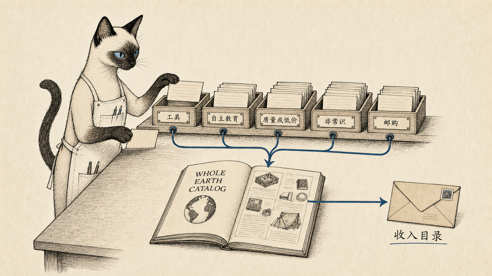
条目 01
什么东西能进入目录
首刊给了五条门槛：作为工具确有用处，和自主教育有关，质量高或成本低，尚未成为人所共知的常识，并且容易通过邮购取得。
后面的那句也关键：这些信息会根据使用者和工作人员的经验不断修订。目录从一开始就会随着读者的使用经验持续改写。
原刊 n1：功能、宗旨。
1968 · FALL
从目录的使用办法开始，依次进入整体系统、庇护所、工业、传播、共同体、游牧与学习，最后回到索引、机构和封底。九章沿着原刊顺序排成一条连续的阅读路径。
1968 年首刊没有急着介绍某个工具。它先说明这本目录如何判断、如何订购、如何改正错误，以及供应商和读者在这套系统里各自站在哪里。
这一章像一本目录的操作台。读者要翻页，也要寄信、下单、反馈、写评介，把使用经验送回目录。
《全球概览》把自己定义为“评价与获取工具”。它同时判断某样东西是否值得收录，以及读者能否知道它、买到它、用它推进自己的学习和生活。

首刊给了五条门槛：作为工具确有用处，和自主教育有关，质量高或成本低，尚未成为人所共知的常识，并且容易通过邮购取得。
后面的那句也关键：这些信息会根据使用者和工作人员的经验不断修订。目录从一开始就会随着读者的使用经验持续改写。
原刊 n1：功能、宗旨。
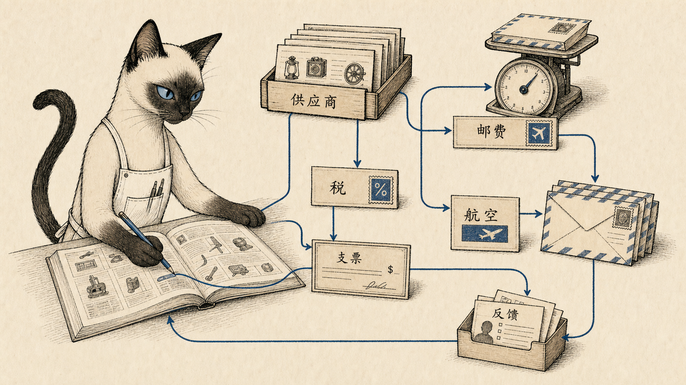
《概览》反复提醒读者：多数订单应寄给条目里列出的供应商。价格不含邮费时，要先查邮寄或快递费用；州内交易还要加州税，并随订单附上支票或汇票。
它也保留一点自己的中转功能。某些标出的书可以由《概览》代发，西海岸读者可能因此更快拿到。海外寄送则全部走航空。
原刊 n3：从《概览》订购、订阅说明。
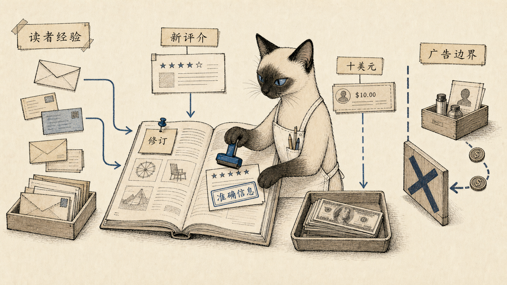
这本目录把可靠性押在使用者身上。供应商服务不好，读者可以写信告诉编辑；某个条目有更好的评介，读者也可以投稿。被采用的评介会支付十美元，评审人与最早推荐者都会署名。
广告也被框住：只有已经列入目录的条目、供应商、制造商和创作者能刊登广告。供应商不能花钱买进目录，研究人员可以接受免费样品，但不保证会给出好反应。
原刊 n3：提建议、撰写评介、广告、供应商政策。
1968 年首刊的第一章叫“整体系统”。它借一组差异很大的书来谈系统：富勒的设计科学、卫星拍到的地球、人体表面图谱、航空地质照片、肥皂膜和骨小梁、荣格、维纳、Koestler、未来研究通讯。
这些条目的共同点，是训练读者换一个尺度、换一个角度看东西。一个人、一座房子、一条河、一条消息、一个未来情景，都可以被当作会相互牵动的整体。
不要把它读成“系统论书单”。更适合的读法是：每一页都在换一种观察工具。有时是世界地图和卫星照片，有时是显微镜、肥皂膜、维护中的房子，有时是心理学、控制论和未来预测。
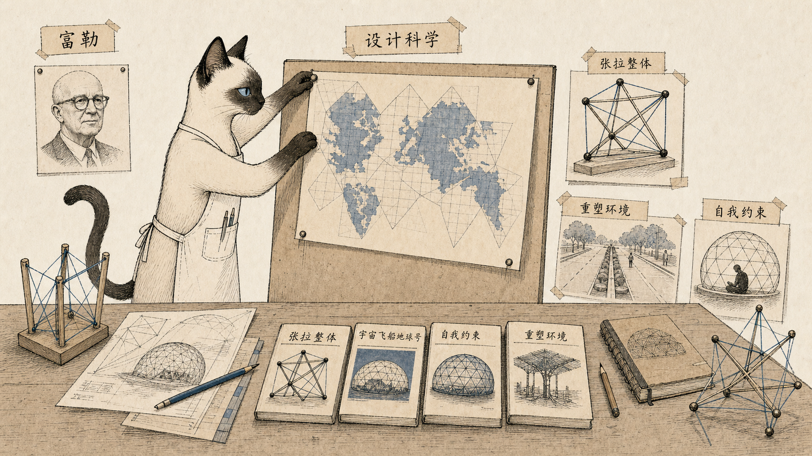
首刊把 Buckminster Fuller 放在这一章开头。他提供了一种看世界的姿势：从张力和压力看结构，从世界地图看地球，从环境设计看人的行为。
最有意思的一句是“重塑环境；不要试图重塑人”。在交通事故的例子里，富勒直接讨论道路分隔、立体交叉、弯道倾斜和自动信号。系统思维在这里很务实：先改会反复制造问题的环境。
原刊 n4-n5：Buckminster Fuller、整体系统、张力/压力、重塑环境、自我约束。
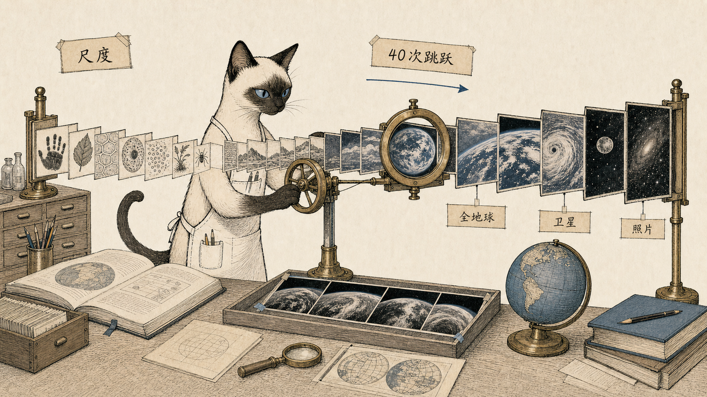
《Cosmic View》用四十次尺度跳跃，把读者从近处一路带到宇宙尺度。紧接着的《Full Earth》和 NASA 地球照片，又把抽象尺度变成真实影像：ATS 卫星每半小时拍一次地球，Gemini 飞船带回大片彩色地表。
这里的震动不在“地球很美”这么简单。读者第一次被迫从外部看自己生活的地方：云带、海岸、沙漠、旋涡全都在同一个画面里。首刊后来反复出现的“全地球”感，就是从这种视觉训练里长出来的。
原刊 n6：《Cosmic View》《Full Earth》《Earth Photographs》。
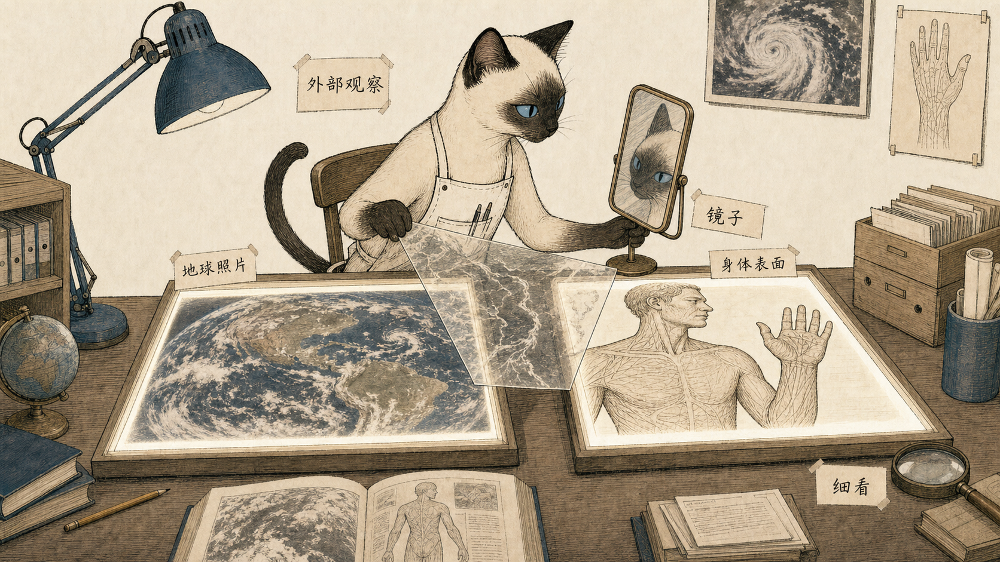
《Surface Anatomy》被放在地球摄影后面，安排得很妙。编辑说，我们其实不太会使用镜子；一本从身体表面看身体的书，可以像卫星照片那样，把熟悉之物重新变陌生。
这页读起来很像一组双镜头：一边是大气、海岸和陆地，一边是皮肤、肌肉和手掌表面。系统既在远处，也在自己的身体里，都需要观察和学习。
原刊 n6-n7：《Earth Photographs》《Surface Anatomy》。
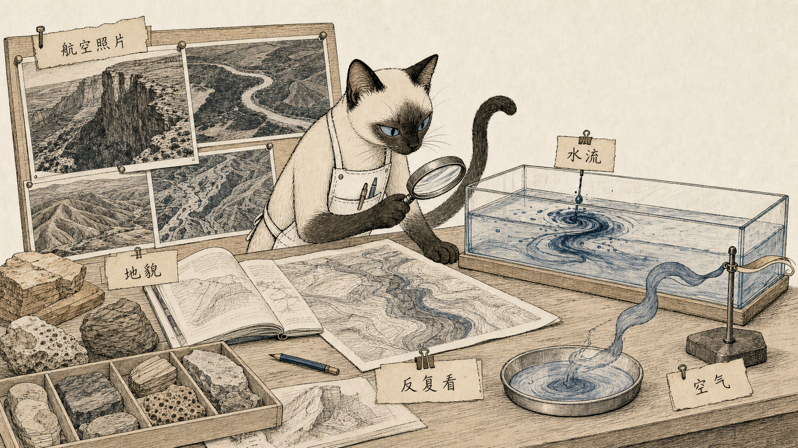
《Geology Illustrated》有四百张航空照片，文字说明很少。编辑喜欢这一点：山、崖、河流没有替读者贴满标签，读者只能像在野外一样反复看，慢慢把地貌读出来。
旁边的《Sensitive Chaos》把注意力转到水和空气的运动。书里有神秘主义色彩，编辑并未全盘接受，仍认为它抓住了水流形态中的洞见。整体系统同时关心静态结构、流动、旋涡和变化中的形状。
原刊 n8：《Geology Illustrated》《Sensitive Chaos》。
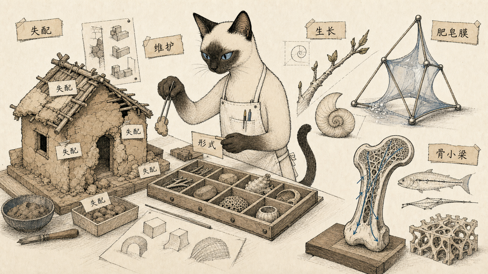
Christopher Alexander 的《形式综合札记》讨论“失配”：哪里不合适，哪里反复出问题，哪里就逼着设计者重新组织形式。他特别看重日常维护，因为维护的人最早碰到细节中的不顺手。
D’Arcy Thompson 的《论生长与形态》把这个问题推到自然里。肥皂膜会自己形成几何结构，骨小梁会沿受力方向排列。首刊把这两本书并排放，让读者看见压力、材料、使用和生长怎样一起塑造形式。
原刊 n10：《Notes on the Synthesis of Form》《On Growth and Form》。
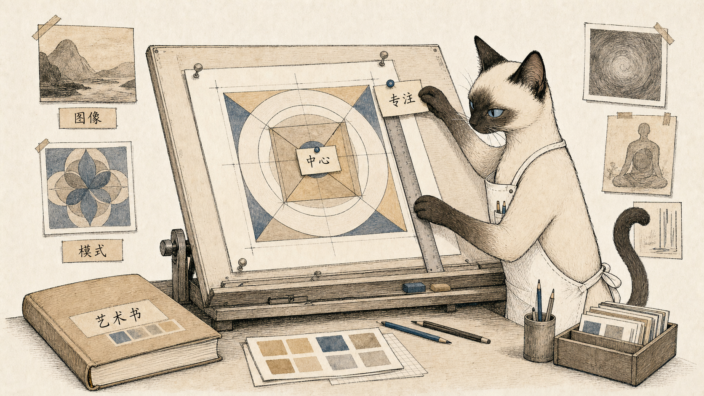
《Tantra Art》是首刊标出的唯一一本艺术书。它进入“整体系统”，因为这页把图像看成一种专注练习：现象、模式、中心和观看方式都会在图像里重新组织。
编辑的评价也很克制：复制品惊人，文字有诗意，但想掌握细节的读者可能会觉得不够精确。这个判断很 Whole Earth：喜欢它的强度，同时保留使用者的警觉。
原刊 n11：《Tantra Art》。
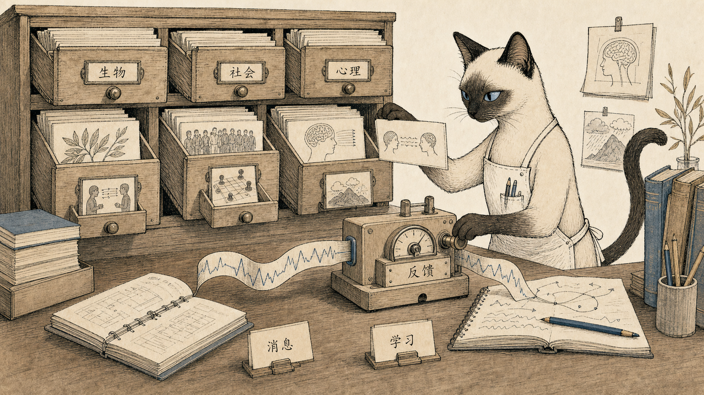
《General Systems Yearbook》把生物、社会、心理、博弈、语言、政治、控制论、天气这些领域放到一起找共同动力。它很技术、很重，但偶尔会闪出真正有用的连接。
这一页旁边的荣格和维纳让范围更大。荣格把疾病、冲突、土地、个性发展都放进“心灵”的张力里；维纳则说，要理解社会，必须研究社会拥有的消息和通信设施。这里的系统包括机器，也包括人怎样感受、学习、传递消息。
原刊 n9、n12：《General Systems Yearbook》《Psychological Reflections》《The Human Use of Human Beings》。
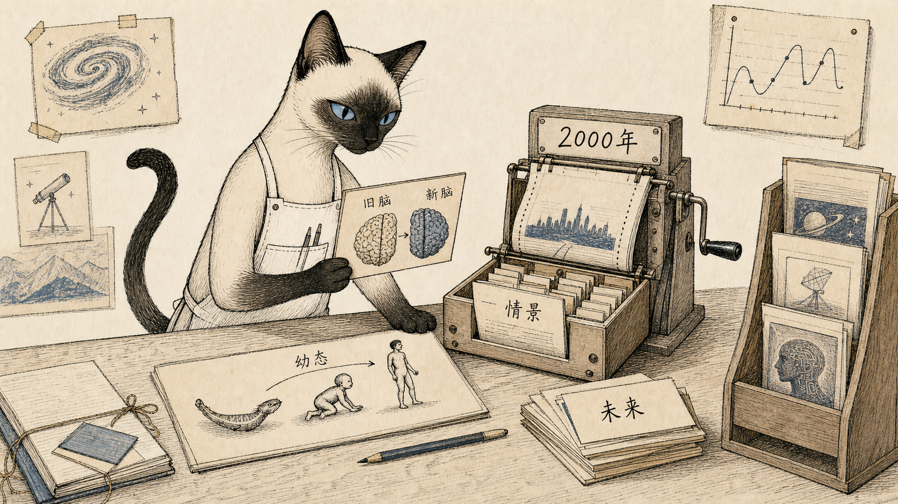
Koestler 的《机器中的幽灵》谈旧脑、新脑、自毁冲动，也谈幼态持续怎样让物种从进化死胡同里退出来。首刊把焦点落在一个尖锐问题上：大脑的组织方式会不会把人类带向危险。
《2000 年》和《未来学家》则把系统方法带到预测。Kahn 的未来研究有趋势、情景和“无意外预测”，但编辑说得很清楚：这本书未必给出准确未来，却给出一幅很周全的“现在”。我们拿来规划未来的，常常正是当下的统计、幻想和预期。
原刊 n13：《The Ghost in the Machine》《The Year 2000》《The Futurist》。
“庇护所与土地利用”这一章很杂：测地线穹顶、充气膜、废车顶、MIT 学生自己搭夹层、日本住宅、奥德尔维修手册、阿拉斯加锯木机、VITA 乡村技术、圆锥帐篷、煤油灯、人类改造地球、蘑菇、有机园艺、养蜂和手摇研磨机都在里面。
读完会发现，首刊关心的“住”包括亲手修、亲手搭、亲手种，也包括理解土地、水、材料、火、光、昆虫和工具之间的关系。
一会儿是 30 英尺阳光穹顶，一会儿是 3/16 英寸绳子；一会儿是 Alexandria 港和 Wisconsin 林地变化，一会儿是一罐蜂蜜、一台研磨机。它把庇护所放回生活现场，也把土地利用落到很小的手部动作上。
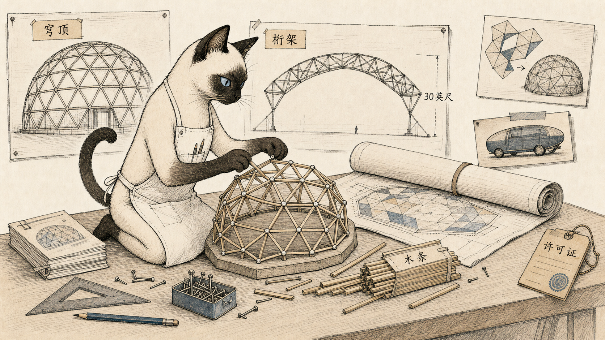
这一章开头仍然有富勒，但焦点变得更能上手。《戴马克松世界》适合正在做穹顶、几何、汽车、人口地图和图表的人；《空间结构》则是厚达 1,233 页的大参考书，讲穹顶、桁架、索网和大跨度结构。
最接地气的是《测地线阳光穹顶》：5 美元买到计划和建造许可，用木条和便宜的聚乙烯蒙皮，最大可以做到 30 英尺直径。几何最后要落到材料、尺寸和能不能搭起来。
原刊 n14：《The Dymaxion World of Buckminster Fuller》《Space Structures》《Geodesic Sun Dome》。
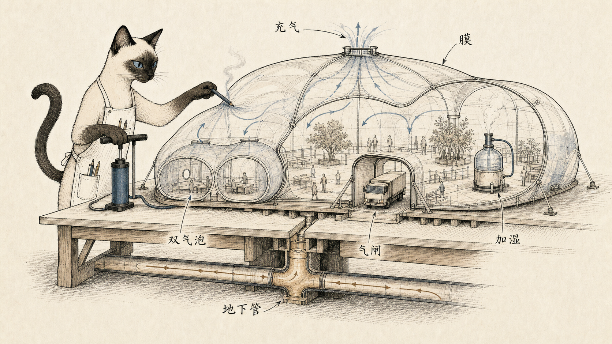
Frei Otto 的《张力结构》第一卷讲充气结构。编辑说，见过这本书的设计师会兴奋到指指点点、上蹿下跳，因为它把柔性蒙皮、气压、环形主管、地下分配管、加湿器、气闸这些东西组织成了建筑。
这页从肥皂泡讲到空气房屋：两个大小不同的气泡之间，隔膜会弯曲；建筑里的“皮”也会随压力、湿度和进出通道一起工作。
原刊 n15：《Tensile Structures, Volume One: Pneumatic Structures》。
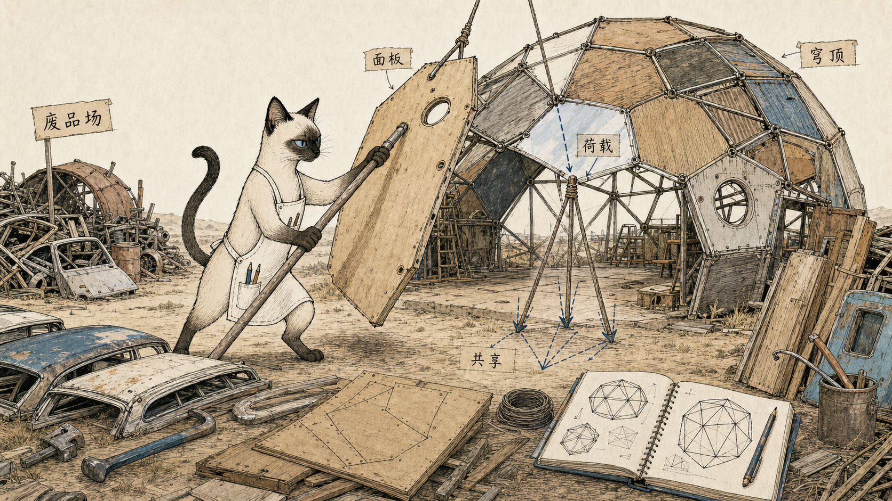
《穹顶建造手册》来自 Drop City 和 Steve Baer。它同时讲晶体学理论和废品场实践：怎样扭曲多面体而不改连接角度，怎样把汽车车顶切下来又不伤到自己。
书里那段抬面板的经历很有戏：几个人苦撑一块 8 × 19 英尺的重面板，等穹顶自己找到形状，原本支撑它的三根杆子竟然全被抬离地面，像钟摆一样挂着。编辑顺势把它写成一种社会隐喻：真正共同分担荷载的结构，会让某些“承重支柱”显出多余。
同页的《好消息》也很 Whole Earth：免费单页报里装着 Toffler、McHale、Fuller、John Cage、Heinz von Foerster。它和 Baer 放在一起，像是在说，建筑、信息和社会想象会互相碰撞。
原刊 n16：《Dome Cookbook》《Good News》。
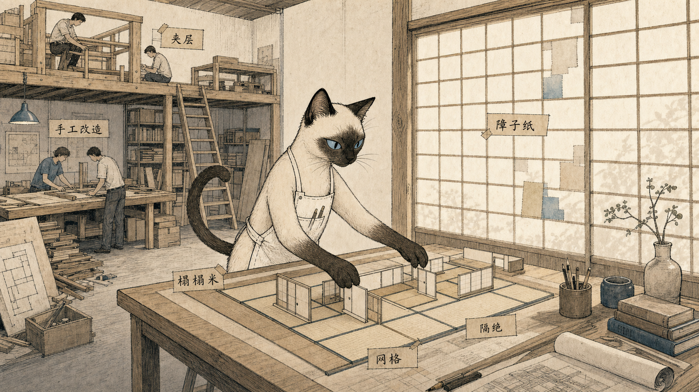
《建筑设计》被推荐，是因为它持续刊载真正的新信息。页中有一个 MIT 制图室案例：学生嫌空间不够，偷偷搬隔墙、找材料、搭夹层。教师也面对空间紧张，却请外部设计师和承包商解决，最后少了兴奋、投入和成就感。
《日本住宅》提供另一种改法。房间可以先剪成纸片，在 ken 网格上排来排去；障子纸会把光变成柔和的黄昏，破了再补，纸面反而更有生命。这里的住宅是一套可以持续调整的环境。
原刊 n17：《Architectural Design》《The Japanese House》。
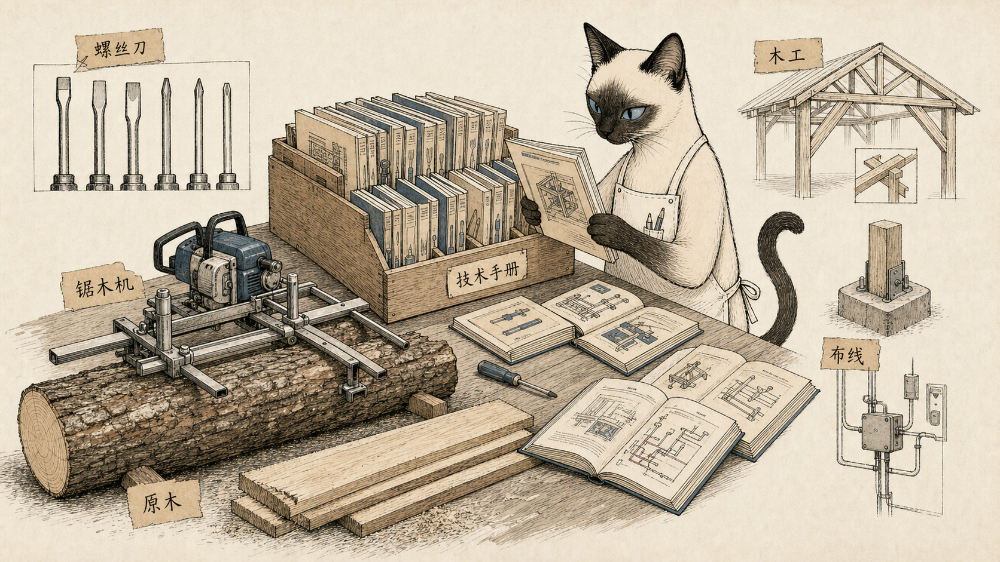
奥德尔指南在这一页列了 56 种，从汽车、家电、无线电、电视维修，到电学、木工、焊工、柴油机、管道、制图、供水、污水处理、流体动力。编辑承认自己没有能力逐本比较，所以公开征求更懂行的读者评介。
同页的阿拉斯加锯木机更直接：把附件装到链锯导板上，就能在偏远地方锯出足尺木材。页面里有型号、重量、价格和四步切割法，把人从原木一路带到梁木、木屋原木和铁路枕木。
原刊 n18：Audel Guides、Alaskan mill。
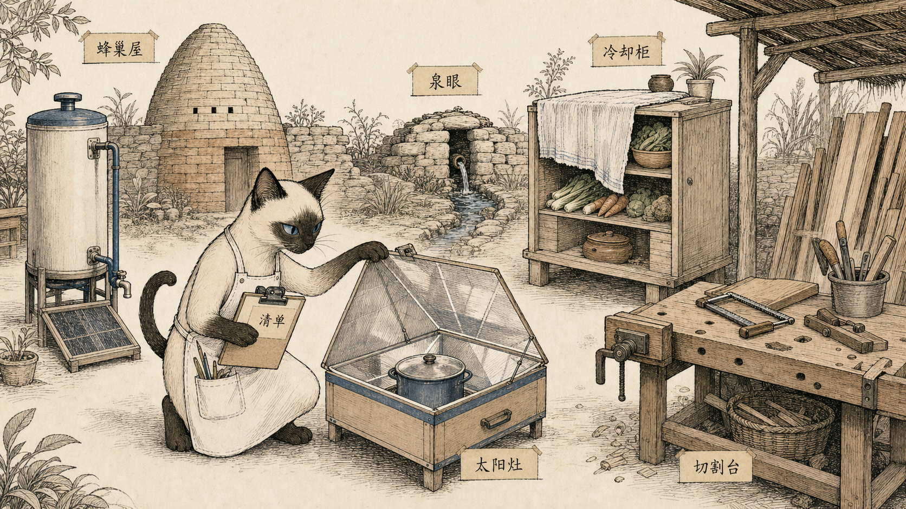
VITA 被称为小群体技术信息的少数可靠来源。它有《乡村技术手册》、免费目录和低价专题论文，题目从小型水力、腌鱼、CINVA-Ram 制砖到太阳灶建造。
这一页列出的东西很具体：蜂巢式建筑、木工切割台、太阳能热水器、受保护泉眼、蒸发式食物冷却柜、太阳灶。它还列出 54 项仍在征集或开发设计的设备，包含泵、深井泵、孵化器、自动冲水厕所、混凝土砌块机、竹制科学器材、铁匠炉、陶轮和纺织设备。
原刊 n19：Village Technology / VITA。
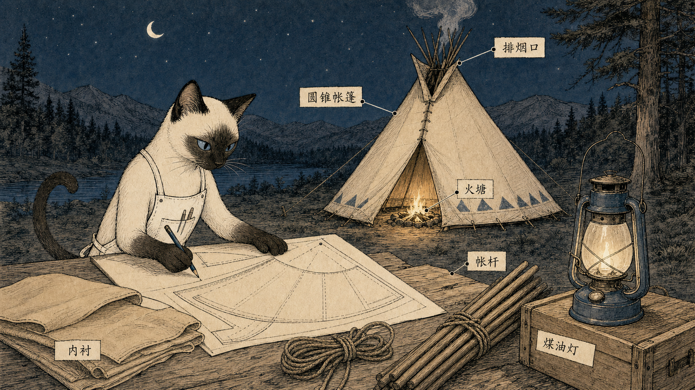
《印第安圆锥帐篷》写得特别动人：这种住所让人和火、大地、天空、圆形空间贴得很近。白天树影在帆布上演戏，夜里换成人影；深秋骑行回来，满月从排烟口照进来，火光和月光混在一起。
页面也非常实用：18 英尺西乌圆锥帐篷的裁片、绳结、帐杆、木桩环都给了细节。现成帐篷则列出 10、14、20 英尺三种直径和不同帆布价格。旁边的 Aladdin 煤油灯被拿来对比 Coleman 灯：安静、明亮、不用打气，只要照看好纱罩。
原刊 n20：《The Indian Tipi》、Tipis、Aladdin Kerosene Lamps。
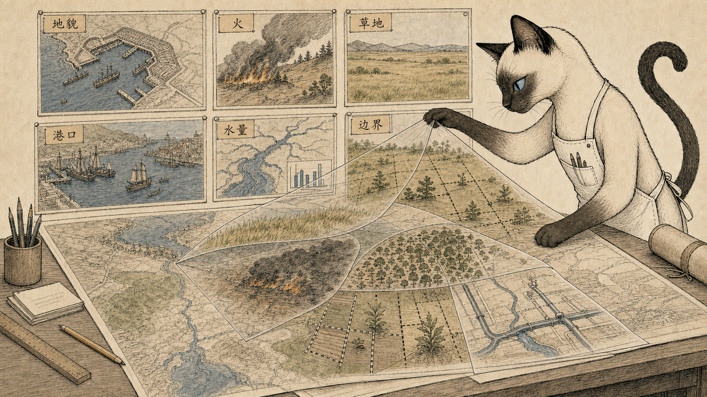
《人类在改变地球面貌中的作用》接近 1,200 页，来自 1955 年一场大型研讨会。它讨论火、林地、草、农民生活生态、海洋收获、港口、航道、海岸线和污水处理。
这页反复指出：我们以为“天然”的景观，常常已经被人类重新披上外衣。欧洲草种、玉米带、加州草地与橡树景观、港口工程、地产边界、排水和水量收支，都在改变地球表面。土地利用构成了人类生活留在地球表面的巨大手迹。
原刊 n21：《Man's Role in Changing the Face of the Earth》。
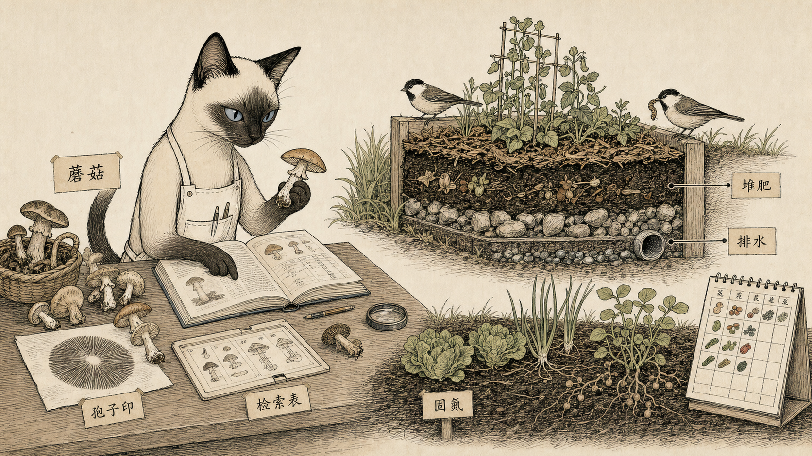
两本蘑菇书的评介很像野外现场：发现陌生、黏滑、发亮的菌类，等孢子印，查检索表，最后才决定能不能下锅。Smith 的《采蘑菇者野外指南》更技术，McKenny 的《美味野生蘑菇》则让人想立刻冲进树林。
《怎样用有机方法种植蔬菜和水果》则厚到 926 页、55 万字。评介者把它放在餐桌上随手翻，不愿收进书架。它讲土壤、堆肥、育苗、灌溉、采收、秋冬园艺、虫害防治、约 100 种蔬菜和 60 种北美水果，还细到维生素流失、豆科接种固氮细菌、排水瓦管和食虫鸟。
原刊 n21-n22：Two Mushroom Books、有机园艺。
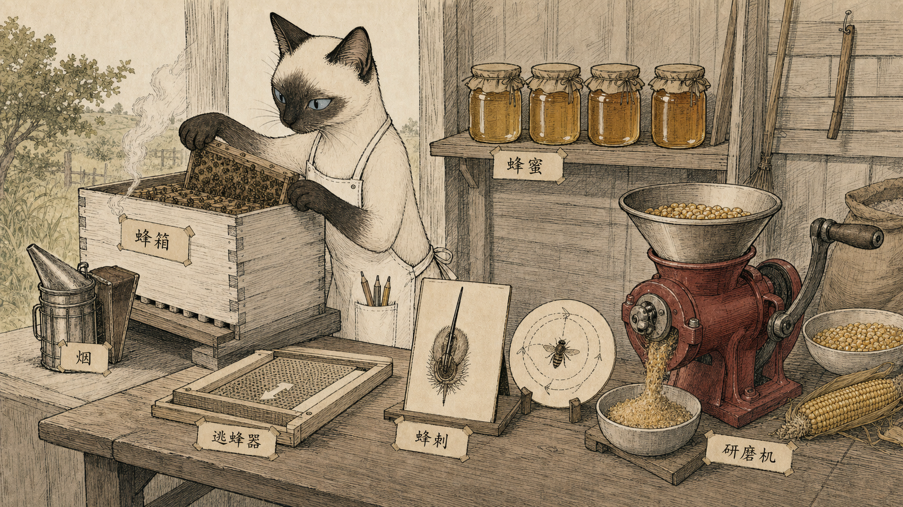
《养蜂全书 ABC 与 XYZ》从 1877 年一路修到第 33 版。页面把养蜂写得既能补贴收入，又有乡野冒险感：几箱蜂蜜就能卖给邻居，操作蜂箱要避开入口正前方，先向入口吹烟，再轻轻开箱。
同页的通用研磨机有很典型的 Whole Earth 口吻：作者在 Hopi 和 Navajo 保留地之间的贸易站见过它，订来后发现它像红色消防栓一样粗笨，还得锉主轴一小时才能装进手柄。但它确实能磨玉米、豆子、香料、花生、小麦、肉、盐、燕麦和类似材料，而且便宜。
原刊 n22：《ABC and XYZ of Bee Culture》、Universal Mill。
“工业与手艺”这一章很像一间杂乱但好用的工作室。桌上一边是水轮机、数据处理、人体尺度、工业黄页、政府研究报告；另一边是太阳能热水器、摄影暗房、校对符号、雕塑材料、玻璃器皿、毛线、皮革和切面珠。
它关心普通人怎样读懂工业世界，怎样把目录、期刊、手册和材料来源变成可用的判断力。你可以从飞机翼型看到一支圆珠笔，也可以从一张珠子订单看到一件手工作品的价值。
这章不断切换尺度：十万页级的工业目录、几百页的设计手册、几十美元的工具、几美分一平方英尺的材料、半公斤起订的切面珠。它把生产系统拆开，让读者看到机器、身体、材料、出版、照片和手艺之间的真实连接。
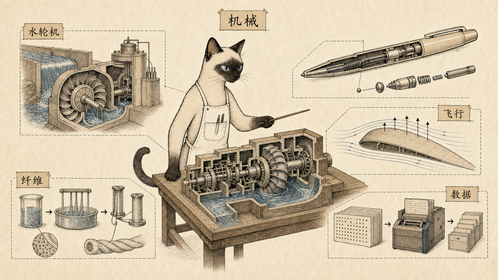
《万物如何运作》被编辑称为最好的厕所读物之一，因为它适合随手翻，也适合真的拿来理解世界。它从圆珠笔讲到数据处理，从飞机到粘胶纤维工艺，从 Francis 水轮机到 Kaplan 水轮机。
这一页把“工业”变成一组可观察的过程。水怎么推动叶片，气流怎么托住机翼，纤维怎么从化学流程里出来，数据怎么被打孔卡片搬运，都可以被画出来、看明白。
原刊 n23：《The Way Things Work》。
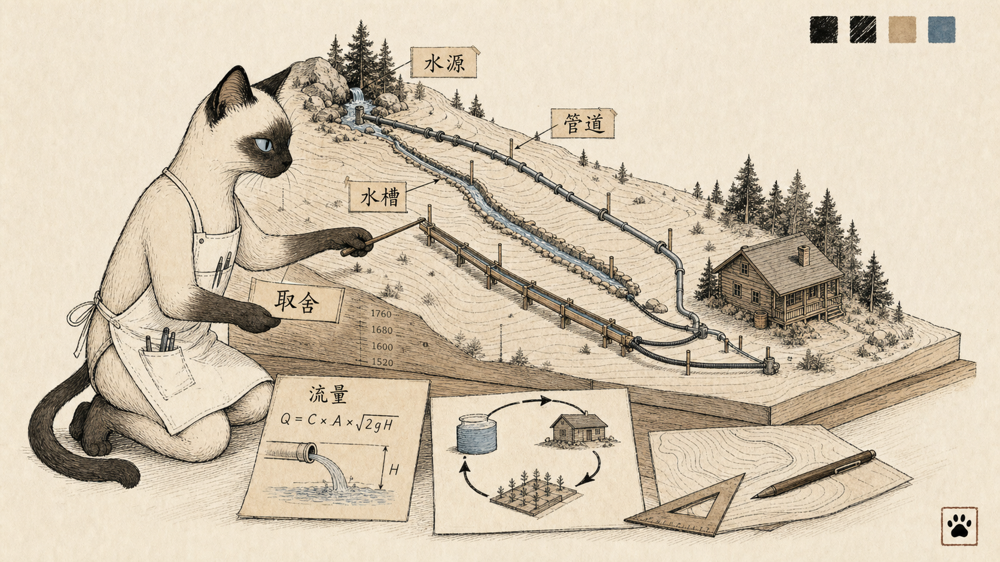
Steve Baer 推荐《工程设计导论》，特别看重书里那个山间小屋供水案例。设计者要比较管道、明渠、水槽、塑料管等方案，还要把坡度、流速、供水量、材料和施工难度放到同一张图上。
这本书迷人的地方，是它没有把工程写成公式崇拜。公式只是工具，真正难的是把一个需求拆成可比较的方案，再接受现实条件的摩擦。水从山上流到屋里，中间经过的是设计判断。
原刊 n23：《Introduction to Engineering Design》。
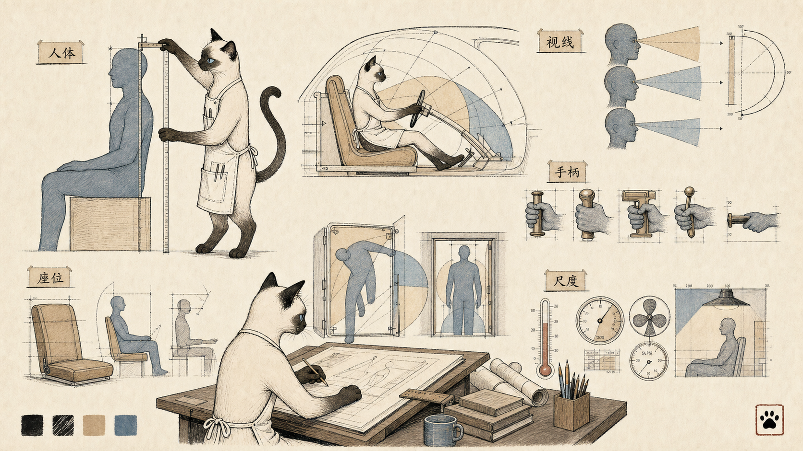
Henry Dreyfuss 的《人的尺度》是一部人体因素图谱：站姿、坐姿、视线范围、手能握住什么形状、控制器该放在哪里、开口要多宽、人在环境变化里能承受什么。
它把“舒服”拆成了可以讨论的尺寸。座椅、车厢、把手、门洞、仪表和视野都不再凭感觉决定。设计如果要进入日常生活，就必须尊重人的手、眼睛、腿、反应时间和疲劳。
原刊 n24：《The Measure of Man》。
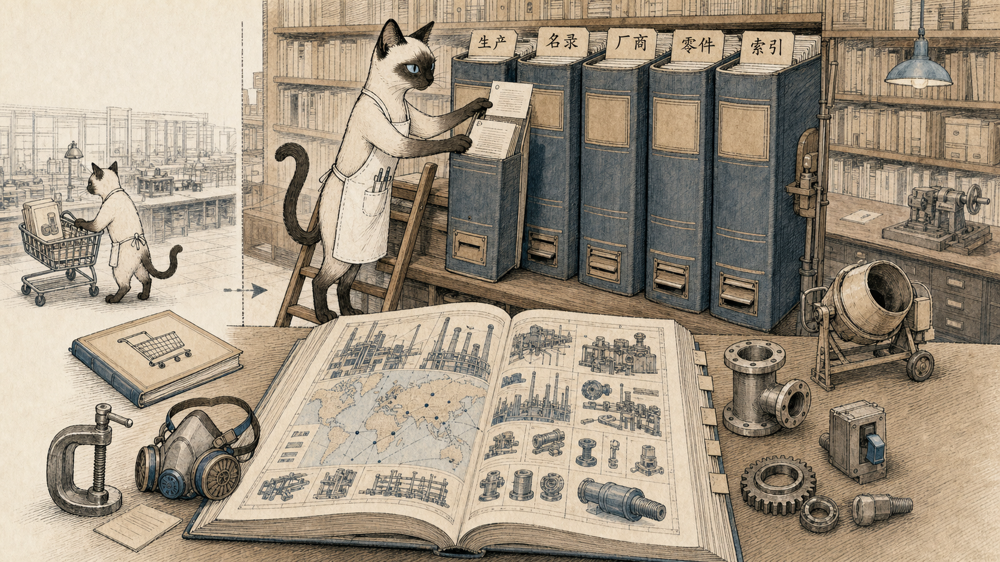
《Thomas Register》像工业世界的黄页：7 卷、约 10,000 页、50,000 个广告、70,000 个分类。编辑说，如果 Sears 目录是消费品世界的镜子，那么 Thomas Register 就是生产系统的镜子。
它能让你从“我需要某种东西”一路找到“谁生产它”。夹具、呼吸器、水泥搅拌机、管件、开关、机器零件，都能被索引、分类和追踪到厂家。它把工业供应链变成可以查询的地图。
原刊 n24：《Thomas Register》。
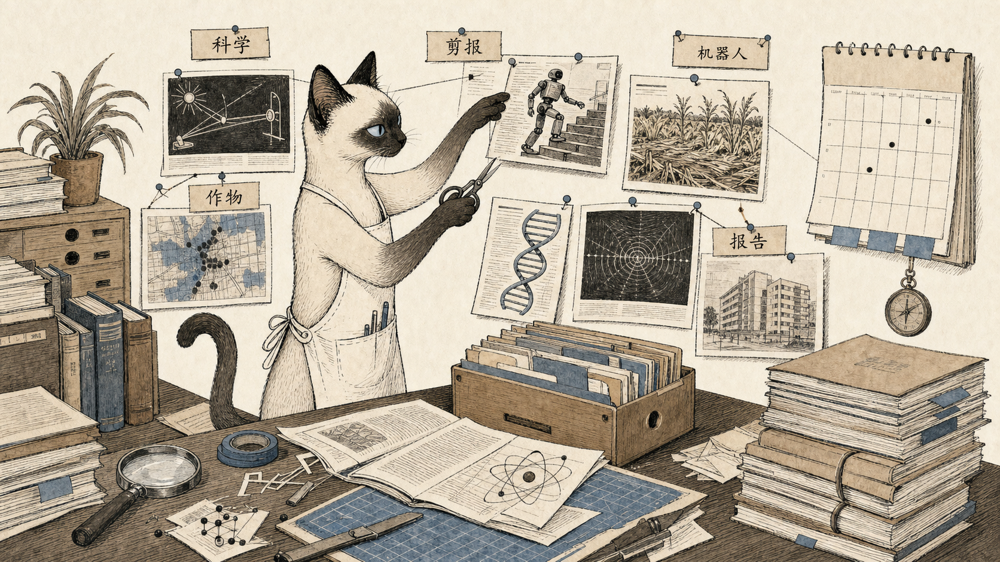
《New Scientist》被描述成一群年轻、有政治意识的科学家写出来的周刊。它既有新闻，也有批评和八卦：光子自干涉、爬楼机器人、脐带处理、运动员兴奋剂、ESP、DNA、酒精与药物、分子结构和迷幻药效都能同页出现。
《Scientific American》提供更稳的深读，话题包括免耕作物、纽瓦克和底特律骚乱分析、生物全息、气压计难题。旁边的联邦科技信息交换所则每年收进约 30,000 份未分类政府研发报告，从低成本自助住房到声学全息，都可能在里面。
原刊 n25-n26：《New Scientist》《Scientific American》及 Clearinghouse for Federal Scientific and Technical Information。
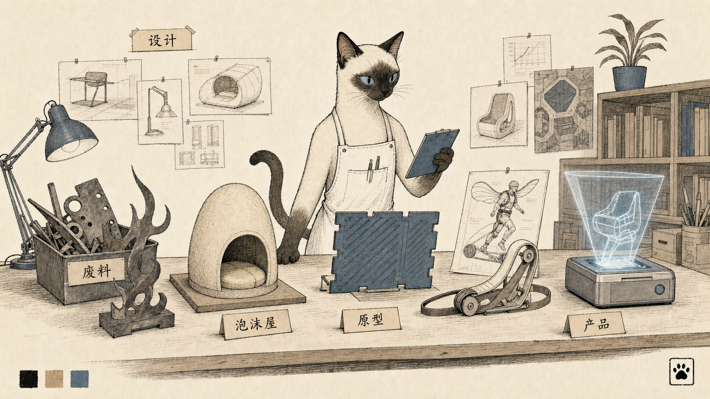
《Industrial Design》把设计机构、材料、工具和争论放在一起：火焰切割钢板剩料可以成为艺术，设计师是否会被淘汰也可以成为问题。它还会介绍聚氨酯泡沫“茧屋”这类半认真、半实验的东西。
《Product Engineering》更像产品现场的观察窗：肌肉动力飞行带、发明者援助联盟、可扣合的尼龙和缩醛表面、移动全息图。1968 年的工业想象在这里还没有定型，很多东西都像刚从工作台上推出来。
原刊 n26：《Industrial Design》《Product Engineering》。
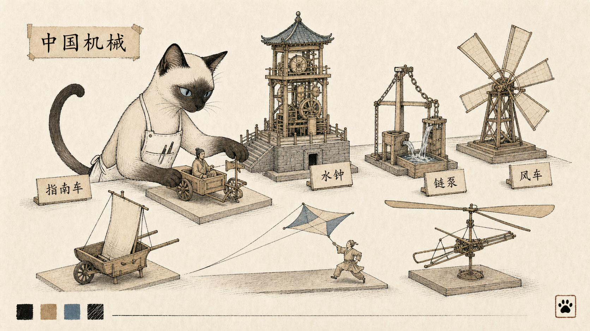
Needham 的《中国科学技术史》第四卷第二分册被放进这一章，理由很清楚：那些想重新学习技术、重新组织小共同体的人，需要看到非西方的机械传统。
这一页列出的例子很丰富：苏颂水运仪象台、载人风筝、指南车、竹蜻蜓、水平风车、链泵、风帆独轮车。技术史跨越不同地区，许多想象和解决办法早在现代欧洲工厂出现以前便已存在。
原刊 n27：《Science and Civilisation in China IV/2: Mechanical Engineering》。
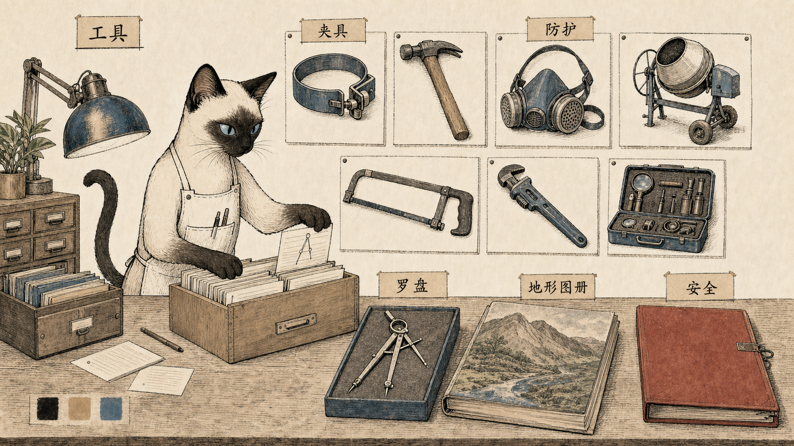
Silvo、Brookstone、Jensen 和 Miners Catalog 被放在一起，像一组不同性格的工具来源。Silvo 适合已经知道自己要什么的人；Brookstone 精准、讲究，列出无尽锯、剪刀、内管扳手和柔性锉；Jensen 偏电工和检查工具；Miners Catalog 则把《Moving the Earth》、工程罗盘和地貌图册带进来。
这一页也出现了爆破手册。它在这里仅作为目录史材料出现，具体危险步骤从略。Whole Earth 所说的“工具”始终需要知识、条件和安全边界。
原刊 n27-n28：Silvo Catalog、Brookstone Tools、Jensen Tools、Miners Catalog、Blasters' Handbook。
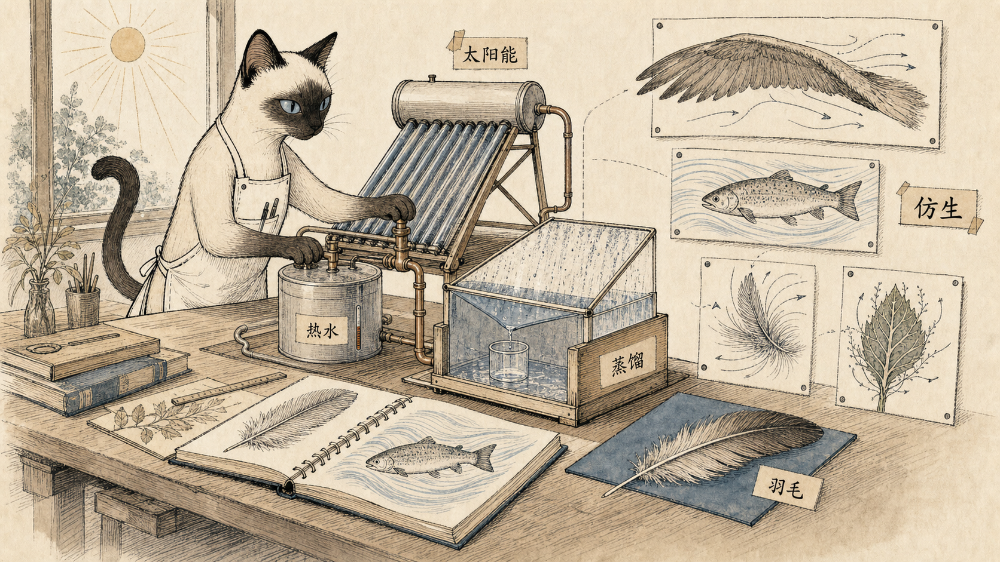
Steve Baer 评介《太阳能的直接利用》时说，这是当时最好的太阳能书。它会把家庭热水讲到很具体：每人每天约 20 加仑热水，80 加仑储水罐，60 平方英尺吸热面，还会讨论太阳能蒸馏和光化学反应。
《结构、形态与运动》则把视线转向动物和植物。金雕起飞、鳟鱼游动、羽毛抑制颤振、植物形态，都可以成为工程思考的材料。这一页把太阳和生物放在一起，核心都是先观察能量和运动怎样真实发生。
原刊 n29：《Direct Use of the Sun's Energy》《Structure, Form and Movement》。
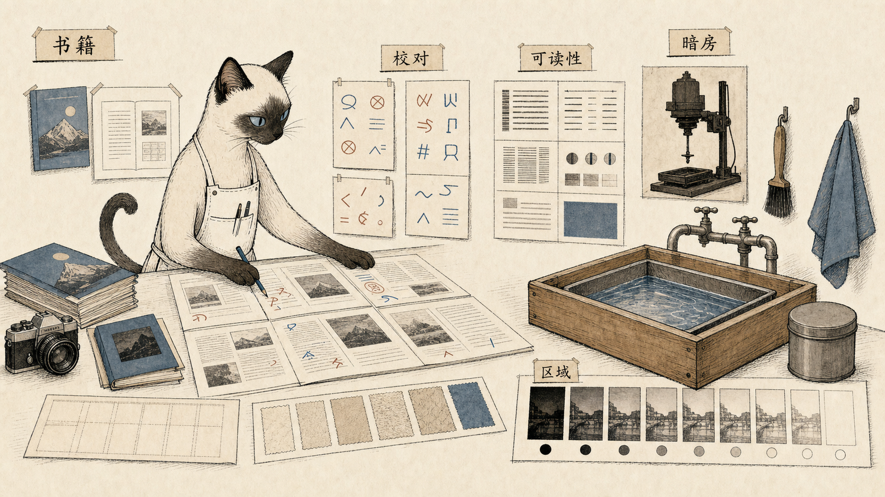
《书籍制作》给作者、编辑、印刷商和读者一套共同语言。它提醒人先规划理想，再根据机械和经济条件调整；页面可读性则受字体、字号、行长、行距、页边距、纸张、对比和内容适配影响。
《区域系统手册》讲摄影里的“预先视觉化”：先在心里看见你要的照片，再用曝光、显影和印放控制把它做出来。同页的 Van Waters & Rogers 目录则带来一个更生活化的例子：用耐腐蚀涂料做胶合板暗房水槽。出版、摄影和材料，在这里共用同一种工作习惯：先想清楚，再动手。
原刊 n30：《Bookmaking》《Zone System Manual》及 Van Waters & Rogers。
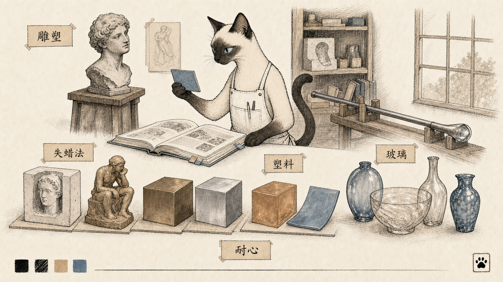
《雕塑家手册》讲石膏、铸造、焊接、塑料、水泥、石材、木材、重复铸造和表面处理。书评说它把细节讲得容易接近，却没有把耐心和技术要求藏起来；失蜡法铸青铜尤其需要长期准备。
《创意玻璃吹制》开头说“任何人都能学会吹玻璃”，评介者马上补了一句：前 50 页都在讲工具，你还得懂管道、金属、木工和电气，另有几百美元设备投入。这里的浪漫很有限，真正动人的是它把兴趣说成一种认真投入的手艺。
原刊 n31：《A Sculptor's Manual》《Creative Glass Blowing》。
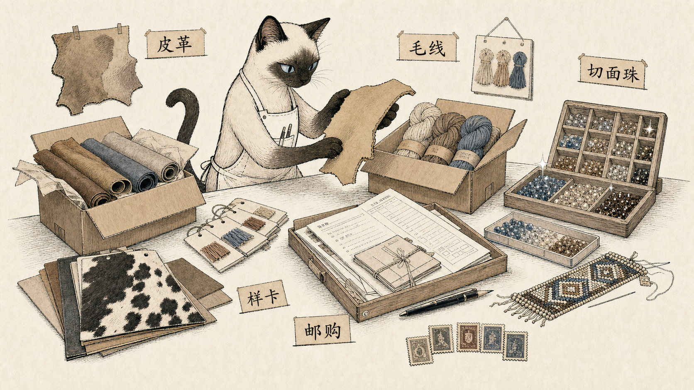
最后一页突然变得很小、很软、很有触感：鹿皮革每平方英尺 0.90 美元，铬鞣所以更耐水；带毛小牛皮有剪毛和未剪毛两种；Melrose 毛线目录和样卡只要 0.50 美元。
切面珠的评介尤其具体。它说判断印第安珠饰时，可以留意用的是切面珠还是米珠；切面珠因为会闪、取得更费工、作品也可能更老，所以会提高价值。宏大的工业系统最后回到一件手工作品：材料从哪里来、为什么贵、谁能买到，都影响作品本身。
原刊 n32：Buckskin、Melrose Yarns、Cut Beads。
“传播”从人的内心开始，穿过海豚的哨声、计算机的逻辑门、电视演播室和星际无线电，最后落在一本新书或一张教室墙上的画。这里的“传播”比说话宽得多：感知、记忆、反馈、索引、剪辑和维修手册，都在帮人把陌生事物变得可读。
这九页塞进了心智研究、控制论、视觉心理学、教育自动化、天文学、电子邮购、电影、电视、汽车维修、出版业和艺术复制。它读起来像一座同时开着十二扇门的资料室。
海豚发出哨声，接收者要把它算成信息；手在延迟画面里失去协调，说明动作依赖即时反馈；电视切换员改变镜头，观众才得到一个连贯场面。章节里的技术差异很大，却都在追问同一件事：信息怎样经过感知、选择和回应，真正进入另一个心智。
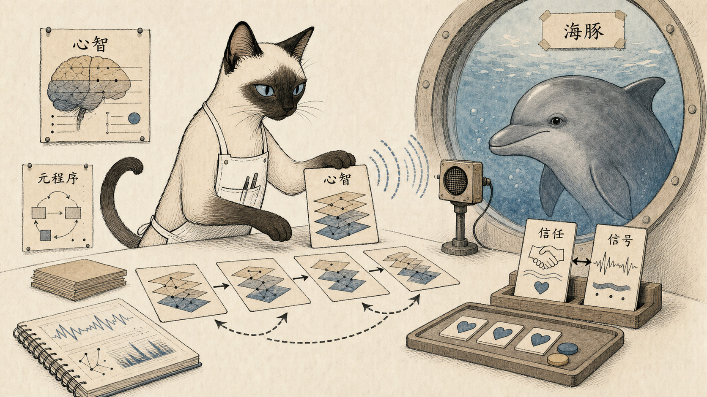
约翰·C·利利把心智叫作“人体生物计算机”。他关心一个人能否辨认那些自动运行的习惯，再修改支配它们的“元程序”。书里甚至把反复困住人的问题想象成上锁的房间；换一个角度，房间便成了可以重新理解的空间谜题。
到了《海豚之心》，问题从内在转向另一个物种。利利区分了信号和信息：声音穿过水面时还只是信号，接收者在心里识别、计算并赋予意义以后，它才成为信息。海豚的哨声、咔嗒声与人类语言之间，隔着发音器官，也隔着信任、回报和漫长的相互学习。
原章也保留了 1960 年代的药物、隔离与跨物种实验记录。这些材料在此作为传播研究史阅读，不转写为当代实验或健康建议。
原刊 n33-n34：《人体生物计算机》《海豚之心》。
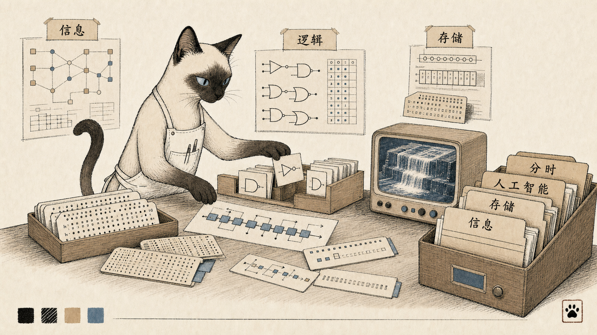
1966 年 9 月号《科学美国人》把整期篇幅交给信息技术，后来又单独结集成书。目录从逻辑门、存储器、输入输出和编程，一路讲到分时计算、数据传输、组织应用、教育、检索与人工智能，几乎把后来几十年的计算机议题先摆上了桌。
这一页还放进一幅很迷人的数值实验：计算机模拟瀑布越过悬崖，掉进水池并溅起水花。计算不再只处理账目，它开始替人观察流体、运动和形态。另一边的移位寄存器与“与、或、非”逻辑门，则展示复杂结果怎样从一串最简单的选择长出来。
原刊 n34：《信息》。
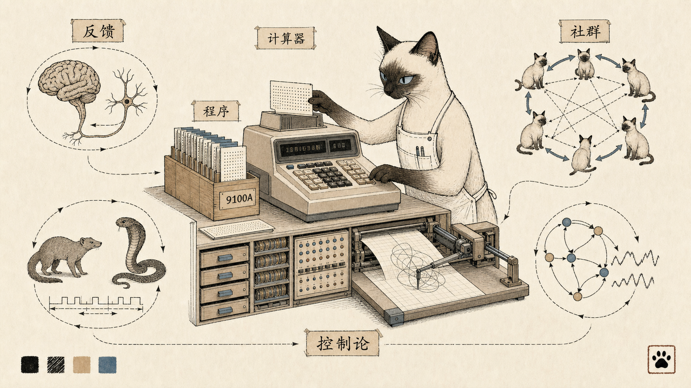
HP 9100A 在 1968 年还是一台 40 磅、售价 4,900 美元的“探究机器”。它能存下 196 个程序步骤，程序可以写进钱包大小的磁卡；打印机、绘图仪和输入输出接口也已在路上。目录编辑把它拿给孩子用，希望他们尽早碰到可编程计算。
同页的诺伯特·维纳把反馈从机器扩大到身体和社会。伸手拿杯子时，人不会逐块指挥肌肉；身体会不断感知“距离目标还差多少”。一个社群有多大，也取决于信息能否在其中有效传递。技术、神经系统和共同体由此出现在同一条回路里。
原刊 n35：9100A 计算器与《控制论》。
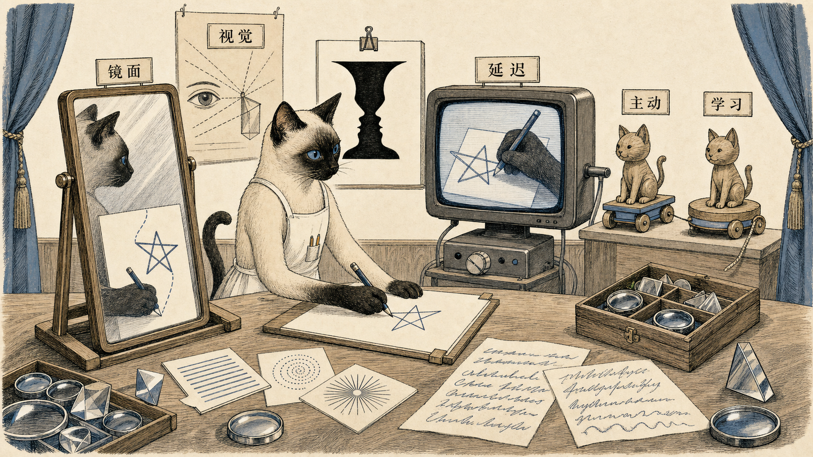
《眼与脑》收集了一批会让日常视觉突然变陌生的实验。镜面装置可以把身体移到视野中的另一个位置；模棱两可的图形会迫使知觉在多种解释间来回寻找；早期的小猫研究则把主动行动与知觉学习联系起来。
最直观的是延迟视频：受试者在监视器里看到稍早以前的手。只差约半秒，动作就会变得急促、不协调，画星形和写字都迅速走样。人平时觉得“手听我的”，其实手、眼睛和大脑一直在交换极短的反馈；回路一慢，熟练感便开始松动。
原刊 n36：《眼与脑——视觉心理学》。
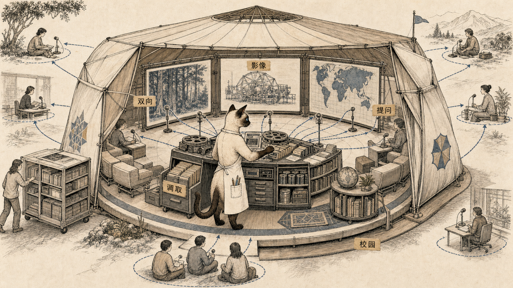
巴克敏斯特·富勒把《教育自动化》放在“传播”章，因为他首先关心信息怎样被人调取。学习者可以在家中选择纪录片，通过双向电视提问；各地系统彼此连接，知识不再被一间教室或一个固定课表锁住。
他对实体校园的建议也很具体：做成一个能适应不同用途的综合环境，像马戏团那样随时改变。这里最有意思的是把教育重新看成一种访问能力：想知道时能找到材料，想回应时有通道，想聚在一起时空间也能跟着变化。
原刊 n36：《教育自动化》。
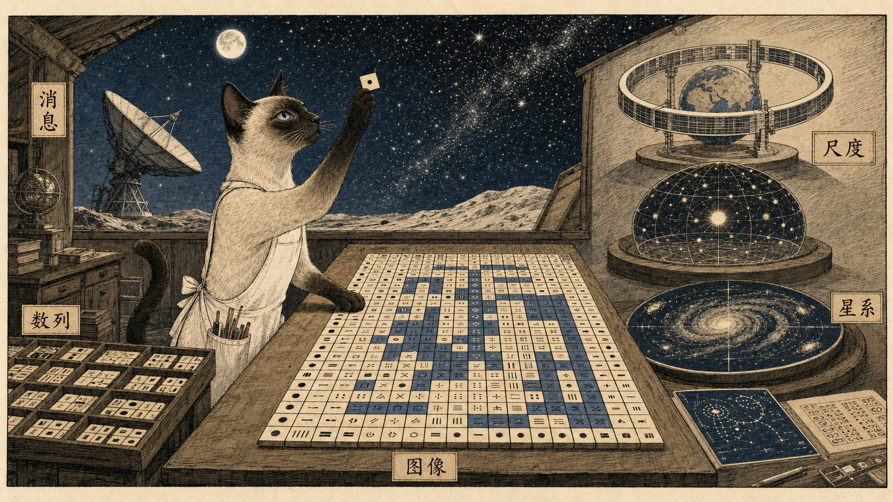
《宇宙中的智能生命》提出一条由 551 个零和一组成的消息。接收者若发现 551 可以拆成 19 乘 29，就能把信号排成矩形，试着从黑白格中辨认图像。这是一道关于共同基础的难题：两个从未接触的文明，能否从数字、形状和比例开始互相猜懂。
书中还列出三种文明尺度：能使用行星能量、恒星全部辐射，乃至整个星系能量的文明。它把通讯距离从房间拉到银河，也把“听不听得见”改成更难的问题：对方的技术、感官和思维方式可能远超我们的经验，我们甚至未必认得那是一条消息。
原刊 n37：《宇宙中的智能生命》。
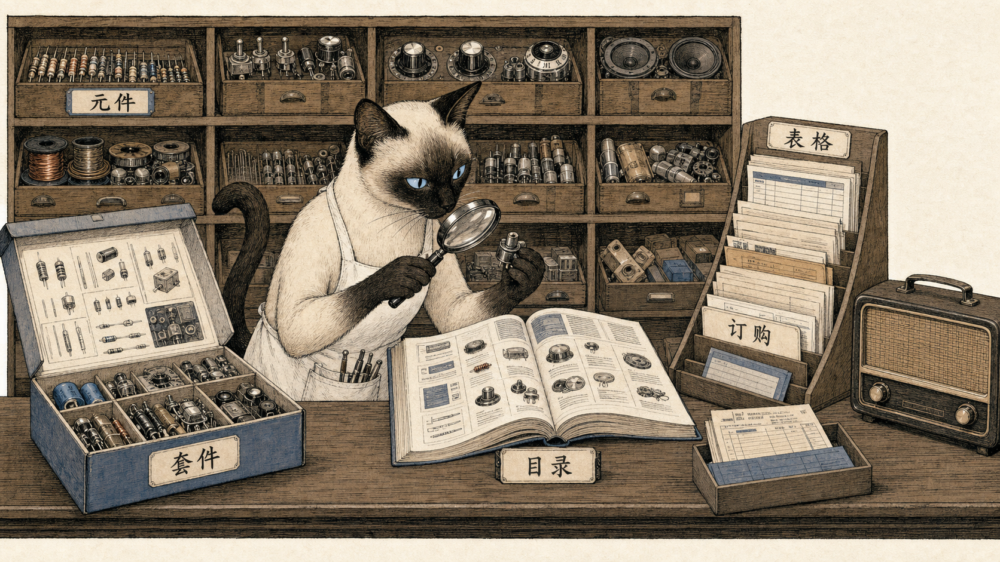
拉斐特和联合无线电的目录各有五百页左右，塞满电容、晶体管、扬声器、唱机、对讲机、定时开关和各种配件。对于住在远离工业供应地的人，目录本身就是一张地图：你先在纸上认识元件，再知道它的价格、尺寸和来源。
Heathkit 又在成品与从零制作之间开出一条路。厂商备齐零件和说明，购买者用时间换来较低价格，也在装配中认识系统。旁边的商业表格目录则处理另一半麻烦：订单、信封、消息副本和回复怎样留档。做东西与组织通信，在这页被摆到了一张工作台上。
原页包含蚀刻化学品、交流电和无线电设备的历史广告规格。这些规格用于说明当年的电子商品目录；现实操作须遵循今天的产品标准和专业安全要求。
原刊 n38：拉斐特、联合无线电、Heathkit 与《现代商业表格》目录。
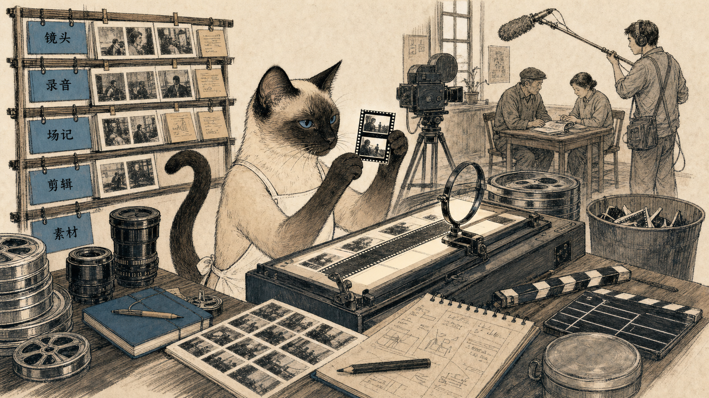
《美国电影摄影师》从七十毫米大片讲到八毫米教学短片，设备广告和技术文章同样重要。《纪录片制作技术》更像一本随手查的现场书：镜头焦距、叠化、工作拷贝标记、声画同步和连续性，都在拍摄真正卡住时派上用场。
它举了一个很生活化的例子：解说员翻剧本时，纸张沙沙声会被麦克风收进去。把纸粘到硬卡片上、使用回形针或橡皮筋，各自又会制造新的声音和麻烦。电影的专业感常常就藏在这些细枝末节里——观众没注意到，说明摄制组处理对了。
原刊 n39：《美国电影摄影师》《美国电影摄影师手册》《纪录片制作技术》。
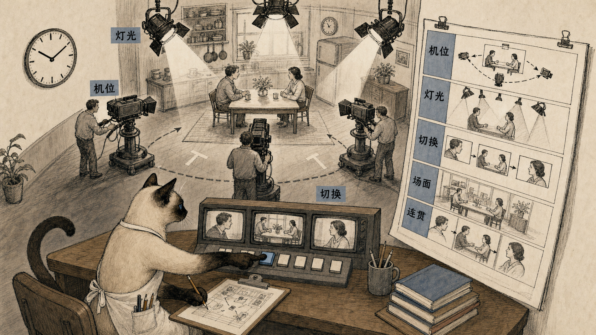
《电视制作技术》把演播室拆得很细：机位、画面、灯光、声音、布景、化妆、组织、切换、字幕、特效和色彩。切换员的一次按键，会决定观众此刻看到全景、反应镜头、叠化还是黑场。
书里用一场夜间入侵戏展示效果如何层层累积：钥匙转动、门缝出现光、人物坐起、对话变紧、枪响、身体切断光束，最后电话铃响。动作、构图、灯光、剪辑、环境声和音乐各有自己的时间线，合在一起才成为观众感受到的“场面”。
原刊 n40：《电视制作技术》。
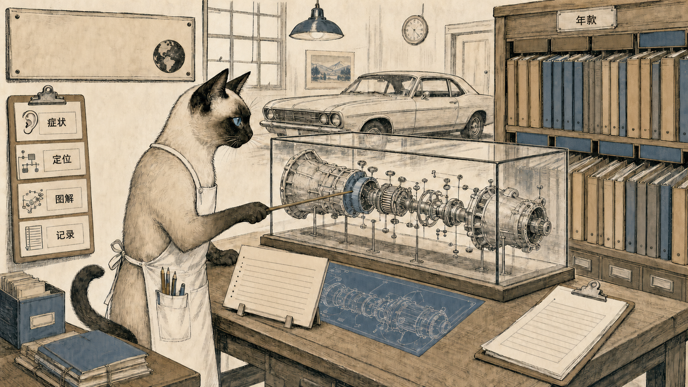
奇尔顿的《汽车维修手册》按年更新，覆盖多种车系与约三十七个品牌。它最像传播工具的部分，是把“车不对劲”翻译成可检查的问题：高速挡为什么自动脱出，为什么会卡住，可能涉及对准、轴承、齿轮、拨叉、润滑或腐蚀中的哪一类。
爆炸图又把一个看似密封的总成展开，让零件之间的关系一眼可见。这样的手册提供了共同语言：车主描述症状，修理者定位系统，图解帮助双方核对理解。原页缺少明确车型与现代适用条件，因此这里只阅读它的诊断结构，不拿它指导现实车辆维修。
原刊 n40：《汽车维修手册》。
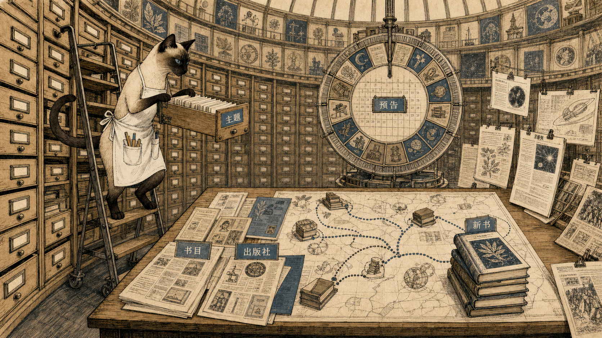
月刊《Books》像一张从出版业内部冒出来的粗粝报纸。1968 年 3 月号同时谈詹尼斯·乔普林、生态设计照片集、即将问世的《未来冲击》、电影《2001》，以及科幻小说的改编消息。书在这里连着音乐、电影、街头文化和政治气候。
想系统查找，就要翻《在版图书主题指南》：1967 年版有 2,724 页，把仍在销售的书按主题列出，并附价格和出版社。若想知道接下来会出什么，还有双月更新的《即将出版图书主题指南》。一张剪报负责制造好奇，一部巨型索引负责把好奇变成书名和地址。
原刊 n41：《Books》《在版图书主题指南》《即将出版图书主题指南》。
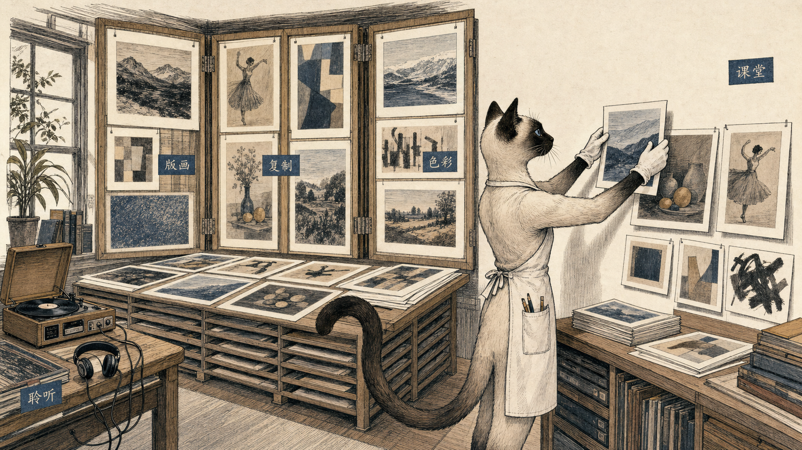
联合国教科文组织从 1949 年起建立绘画复制品档案，由专家按照印刷质量、艺术家和作品的重要性挑选目录条目。每条记录都很完整：作品图像、年代、材料、尺寸、收藏地，以及复制品的印刷工艺、出版者、大小和价格。
目录的选择标准带着当时明显的欧洲偏见，编辑对此直言不讳；它仍有一个朴素用途：替教室、社区空间或家里“恼人的空墙”找到印刷可靠、买得到的画。博物馆里的作品经过纸张、印刷和邮购系统，进入普通人的日常视野。
原刊 n41：联合国教科文组织《绘画彩色复制品目录》。
“共同体”章没有把社群写成一张田园海报。它从找成员、修农场和分配洗碗讲起，接着讨论权威、家务、代际不平等、封闭环境中的礼貌、疾病参考、土地价格、购物判断和政府资料。
这里最有力量的内容都很具体：晚餐时读当天的信，一份家务被拆成每天八小时的专职工作，十个人在狭窄海底舱里刻意对彼此更客气，一本 2,724 页的主题索引帮人找到书。共同体能否持续，取决于这些看起来不浪漫的小事。
目的让人聚在一起，信息让人找到彼此，分工和空间维持日常，书籍帮助人检验理想，医学、土地、产品测试和邮购则连接外部世界。共同体在这一章里更像一套需要维护的生活系统。
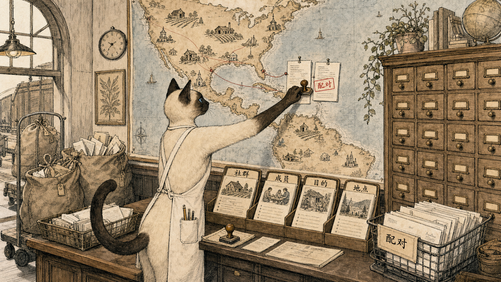
《现代乌托邦主义者》报道各地意向型社群，也准备建立一项信息服务：想加入的人写下自己的期待，缺成员的社群说明地点、工作和生活目的，再由杂志帮助双方找到彼此。社群运动已经大到足以拥有自己的媒体和人才网络。
编辑也很快泼了一盆冷水：新建农场，或让一座荒废农场重新运转，至少要花掉完整的一个季节，还要补做前一年秋天错过的准备。同刊关于巴拉圭和巴西廉价土地、税收与移民条件的宣传，是很典型的 1968 年材料；今天只能把它当作时代记录，不能据此判断现实迁移或产权。
原刊 n42：《现代乌托邦主义者／出路》。
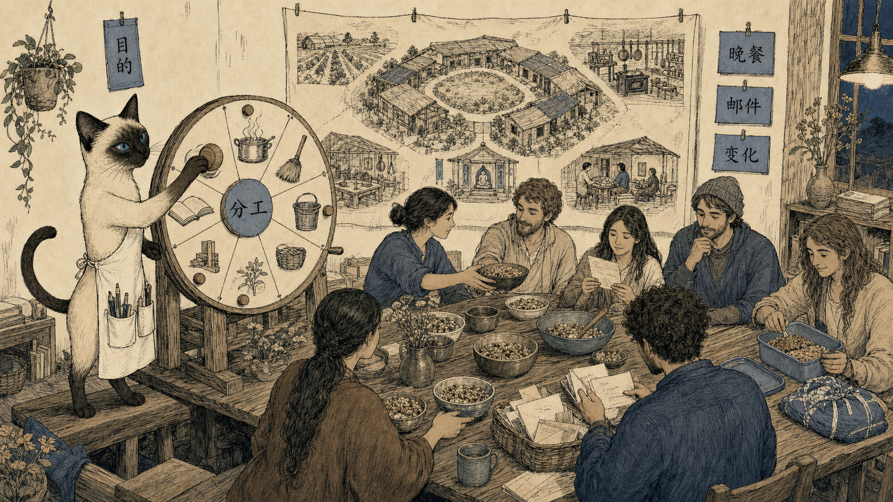
一封读者信提出了尖锐问题：建立在自由上的公社常常很快瓦解，有强权威、尤其宗教权威的社群反倒活得更久。刊物没有给出万能答案，随后强调每个社群都需要清楚的功能，并让全体成员理解功能何时改变、为什么改变。
一段生活记录把这些讨论落回餐桌。晚餐从歌声和短暂静默开始，大家边吃边汇报当天的工作、读到的东西和新闻；甜点前后一起拆邮件，接着洗碗、准备第二天午餐。做饭和清洗按周轮换。社群的“共同”首先出现在时间表、厨房和谁来收拾残局。
原页还收录了一份一次混合数十磅谷物的早餐配方。它适合阅读当时的集体生活尺度，不应直接套用为今天的营养或储存建议。
原刊 n42：社群来信、规划讨论、谷物传单与共同用餐记录。
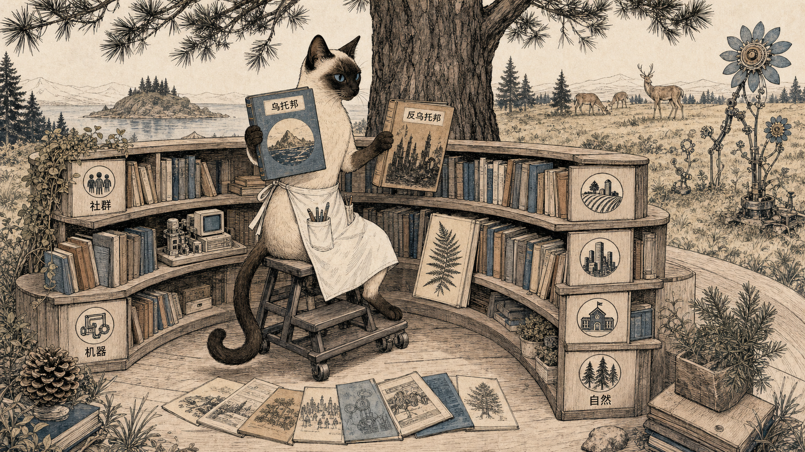
Heathcote 生活学校列出的社群书目很杂：《岛》《桃源二村》《动物农场》《共同体》《无政府主义的模式》《美丽新世界》《一九八四》《理想国》，以及基布兹、教育和美国乌托邦殖民地研究都摆在一起。建设理想生活的人，同时阅读理想怎样实现、怎样变质。
同页那首著名的“由充满爱意的机器守望一切”，想象哺乳动物、计算机、森林和草原彼此编程、和谐共处。《现实主义者》的讽刺则从另一边冲进来，嘲笑富裕社会不断生产和收集垃圾。技术自然乌托邦与消费社会废料堆并排出现，社群书架因此有了真正的张力。
原刊 n42：《绿色革命》《现实主义者》、社群书目与诗作。
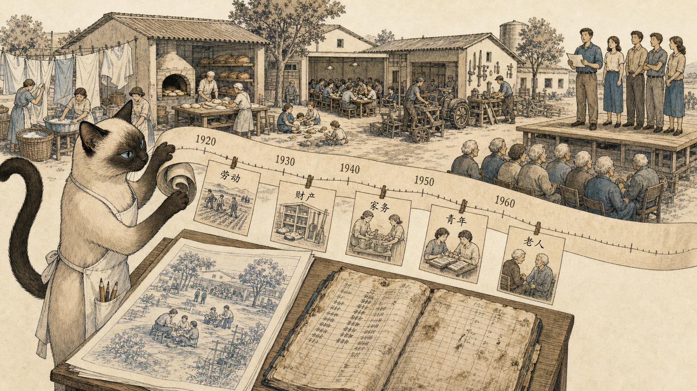
《基布兹：乌托邦实践》研究一座从 1920 年延续下来的社群。财产、婚姻、教育、舒适与交流都经历过调整。创办者多是主动选择劳动的城市知识分子，他们把工作视为对群体福祉的奉献，希望新的社会秩序能创造更亲切、更利他的“新人”。书的结论并不浪漫：这个人格改造目标没有实现。
家务的改变尤其值得看。女性从同时承担做饭、缝纫、清洁、洗衣和照顾孩子，转为每天八小时专做其中一项；她成了专家，工作也变得更单调、回报更少。强调青年与老少平等，又让年轻人获得优越位置，老人处于劣势。旧束缚被拆开后，新的等级仍会生长。
原刊 n43：《基布兹：乌托邦实践》。
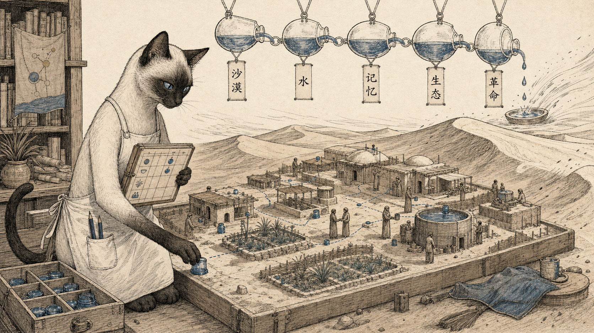
《沙丘》被放进共同体章，编辑给出的理由只有两句，却非常准确：“隐喻是生态，主题是革命。”严酷环境迫使人围绕稀缺资源组织生活，水、纪律、信仰和权力由此纠缠在一起。这本小说当时正在伯克利和 Libre 这类条件更粗粝的社群中流传。
原页选的片段写一位老妇人在死亡中把毕生经历像水倒进杯子，灌入杰西卡的意识。记忆在这里属于个人，也能被共同体继承。放在这一章读，《沙丘》提供了一种想象实验：环境压力怎样塑造规则，上一代留下的经验又怎样进入下一代。
原刊 n43：《沙丘》。
《压力下的群体》研究三组潜水员，每组十人，在海底圆筒居住舱中生活与工作十四天。受访者说，大家会撞到别人、碰翻别人的东西，因此每个人都格外礼貌；一旦不和开了头，很快就会像野火一样蔓延。有人甚至说，即便讨厌某位队友，仍然尊重他。
研究还画出一张“成本—回报”图：环境越危险、要求越高，成就感、声望或共同目标也要足够强，处境才可能被人接受。这个 1968 年模型缺少今天所需的研究细节，适合用来理解当时怎样解释团队表现，不适合拿来筛选人员或管理现实风险。
原刊 n43：《压力下的群体——海底实验室二号心理研究》。
1966 年第十一版《默克手册》有约 1,850 页，密集覆盖疾病、损伤、症状和当时建议的治疗方式。评介提醒读者，它写给护士和医生，技术术语多到可能还要配一本医学词典；对缺少医院和医疗用品的社群，它也很少提供替代办法。
它真正实用的地方，是索引和解释能力：当家人重病时，至少能帮助人理解医生在说什么。原页还摘录了低钠血症、消化不良和高热处置，并夹着不凭处方购买药物的旧说法。这些 1960 年代内容已经过时，不能用于自我诊断、急救或用药，现实情况应依照当代医疗服务。
原刊 n44：《默克手册》。
两本免费地产目录让读者看到 1968 年美国各地的大致价位。一座临湖三层旅馆卖 23,000 美元，带一英亩土地、二百英尺临水面、十八间卧室，可改成滑雪旅舍、私立学校或社群住所。一家经营四十多年的小镇五金店连库存卖 47,000 美元。
农场广告更像一份生活系统清单：234 英亩，130 英亩可耕，另有林地、井、泉、溪流、住宅、谷仓、机械棚、45 头奶牛和 3 头猪，报价 50,000 美元。价格只是一行字，水源、道路、房屋、土壤、现有工作和附近城镇共同决定人能怎样住进去。所有数字都属于历史广告，不代表今天的产权或估值。
原刊 n44：联合农场代理与斯特劳特地产目录。
《消费者报告》的评介写了个轻松的小故事。圣诞节前，妈妈问想要什么，回答是“声音”。翻到购买指南的唱机一栏，测试给出一个兼顾表现与价格的型号，标价 78 美元，于是愿望终于变成一句清楚的请求。
这份杂志的作用超出替人挑商品。它解释怎样避开危险产品和虚假宣传，也把个人购买变成集体行动：许多读者共同支持独立测试，制造商便更难只靠广告定义“好”。编辑最后还开玩笑说，他们仍缺一本专门评二手货的《消费者报告》。
原刊 n44：《消费者报告》及年度购买指南。
《政府出版物通俗指南》用 363 页收录约 3,000 项资料。编辑的评价很有《全球概览》的味道：政府出版物常常异常便宜、内容优秀，缺点是“磨得很细，却磨得极慢”，订购后仿佛永远等不到。
目录里的东西横跨日常生活：北美桦皮独木舟和皮船史、木材手册、家庭养鸡、梯田耕作、公共卫生、家庭紧急护理、人类学职业介绍，以及海军陆战队使用的 738 张大份量配方卡。原页还列出化粪池、蚊虫和原子能材料；这些只能作为历史书目，不应替代今天的工程、卫生、医疗或核安全规范。
原刊 n45：《政府出版物通俗指南》。
《扶手椅购物者指南》汇集世界各地邮购商，专门解决本地买不到的东西。1968 年的例子很有触感：伦敦的香草与香料、纽约的科学和医学书、售价 8 美元起的扬琴套件、9 美元起的巴拉莱卡琴套件、种子公司的蔬菜花卉目录，以及能少量邮购园艺用沙的供应商。
旁边那本折扣指南有些自我提升式的夸张，仍留下几条朴素经验：找到真正有决定权的人，别假装比卖家更懂商品，别靠贬低东西来压价；有时还可以用自己的服务和技能交换原本要花钱购买的物品。省钱需要做功课，也需要尊重交易的另一方。
草药、吸烟产品和肥料说明都来自历史商业宣传，不代表今天的医疗或产品安全结论。
原刊 n45：《扶手椅购物者指南》《如何让你购买的一切便宜 20% 到 90%》。
“游牧”章表面上塞满背包、靴子、地图和露营书，读下去却会发现，它关心的是另一件事：一个人离开熟悉系统以后，怎样选择信息、减轻负重、判断旧经验、找到补给，并在移动中继续学习。
这一章也保留了不少时代杂质。1950 年代军事手册给出未经说明的冻伤和饮水表格，老野外书混着过时的食物与武器建议，探险通讯甚至把越战航运工作说成“不危险”。它们适合用来观察当时的知识世界，不能拿来安排今天的生存、医疗或旅行。
先决定什么值得带走，再判断哪本旧书还能信；目录连接供应商，合作社降低装备门槛，地图保存地点信息，旅行文学则记录人在路上怎样改变。游牧在这里既是身体移动，也是一种随时重组生活的能力。
《创新者》的读者预想社会秩序可能崩溃，于是讨论自我保护、游牧技术、社群技术和安全通信。《隐退者书目》则把“离开体制”拆得更细：哪里能住，吃什么，怎样养牲畜，房子由谁建，医疗、教育、娱乐、交通和废物处理从哪里获得。
这份只有十八页的书目让浪漫想象迅速落地。退隐会把原先由城市和机构承担的工作重新装进行李箱。真正要带走的第一件东西，往往是一套能继续找到资源的目录。
原刊 n46：《创新者》《隐退者书目》。
1967 年的《生存之书》靠荒诞感让警告留在脑中：暴怒公牛、走下飞碟的生物、恶犬、醉汉、碰撞、攀绳、紧急分娩和野外取水，全被编进一部应急百科。编辑说它“朗读起来非常可笑”，笑声正是记忆装置。
问题也同样明显。书中夹着暴力动作、安全带普及前的碰撞姿势、未经验证的绳结和早已过时的医疗步骤。这一页值得保留的是 1960 年代如何想象危险；具体做法已经封进历史陈列柜，现实紧急情况应依照今天的专业指引。
原刊 n46：《生存之书》。
《生存手册》原为被击落的美国空军飞行员编写。书里主张把五十磅背包减到二十至三十磅，也画出全球主要沙漠，并列出寒冷、炎热和饮水条件下的生存表格。后两类数字没有交代样本、衣着、湿度或健康条件，今天不能拿来判断冻伤、热病和用水。
书中最动人的片段反倒与装备无关。一位作者把一把五角钱的瑞士折刀送给图阿雷格贵族，后来得到远超礼俗要求的款待。对方解释，他一辈子都想要一把能够折起来的刀。野外知识在这里忽然变成了待客、观察和一件恰到好处的小礼物。
原刊 n47：《生存手册》。
Margaret M. Wheat 用大量插图记录北派尤特人的日常知识。Jimmy 站到芦苇舟中央，把船身的凹槽踩得更深；成船长八英尺半，却轻到能用一只手提起。另一组画面记录松子怎样在簸扬盘里受热翻动，以及“手戏”中藏棍、猜手和计分的过程。
这些材料展现了知识怎样依附于湿地、松林、材料、季节和共同游戏。外来读者需要尊重其文化归属，避免照搬或表演。原书标题带有今天已经不合适的“原始”称呼，这里把注意力放回具体的人、地方和技艺。
原刊 n47：Margaret M. Wheat 关于派尤特人生活知识的记录。
《露营与野外技艺》写于 1910 年代。1968 年的编辑仍把它当杰作，因为书里保存了大量具体观察，同时也提醒读者别把每条建议照单全收。最好的读法被说得很直白：先挑出已经过时的部分，再寻找那些仍然有用、别处又不容易看到的经验。
原页于是形成一只复杂的旧档案箱：营火、蚊虫、步态、木工、浑水澄清、野兔疾病、常备汤锅、吸烟材料和武器判断都混在一起。它能训练历史阅读，却不能充当现代净水、食品、雷暴、医疗或枪械手册。
原刊 n48：Horace Kephart《露营与野外技艺》。
《轻量露营装备及制作方法》把设计、纸样、装配、材料和供应商放在同一张裁剪台上。书中甚至给出 parka 的前片、后片、袖子、过肩和帽片布局，也告诉读者可以去布料店、帆具厂、修鞋店、军品剩余店和普通五金店找材料。
这种组织方式也适合不亲手缝制的读者：先了解环境，再考虑材料性能、总重量、修补条件和替换来源。轻量装备由一连串相互约束的设计选择构成。
原刊 n48：《轻量露营装备及制作方法》《徒步背包旅行》。
编辑称 L. L. Bean 目录里的“直接与正直”贯穿产品和服务，并明确说它是《全球概览》的榜样。目录先解释猎靴要解决什么问题：重皮靴湿、疼，橡胶靴闷、笨。1912 年的方案把轻皮靴筒和橡胶下部接在一起。
同一目录还卖折叠雪橇、皮带、羊毛保温裤、步行鞋和一把三明治涂抹刀。它最值得学的地方是写法：说清用途、材料、价格和限制，让商品说明本身承担编辑责任。1968 年广告里的承重与救援说法则没有现代认证。
原刊 n49-n50：L. L. Bean 目录与 Maine Hunting Shoe。
Recreational Equipment 1938 年以合作社形式成立，到原刊时期已有约七万九千名成员，目录列出两千种商品，终身会费只收一美元。专业装备昂贵又难找，合作社用共同采购和会员规模降低了进入门槛。
原页逐项展示冻干食品、铝架背包、可套叠杯具、尼龙搭扣、帐杆和动力绳，连重量和价格都写得很细。这些细节帮助读者比较系统总重，却也提醒我们目录会老化：1968 年的攀登绳规格、医疗小册子和保质说明都不能替代今天的装备标准。
原刊 n49：Recreational Equipment 合作社目录。
Gerry 的目录把轻量化画成一套力学问题：保温材料要留住静止空气，睡眠系统要看恢复厚度，背包重量贴近身体时力矩更小，最后再把帐篷、睡袋、锅、食物、雨披和急救用品逐项相加。广告中的低温参数已经过时，但“看整个系统”仍是清楚的设计思路。
同页的 Kaibab 靴广告提供另一种耐用观：鞋底磨穿以后，把鞋面寄回去换底继续穿。它同时警告湿滑路面很危险。产品所借用的原住民来源缺乏可靠说明，不过“先修、再换”的消费逻辑仍值得放在目录史里观察。
原刊 n50：Gerry 户外装备与 Kaibab 靴广告。
美国地质调查局这本《温泉》记录已知泉点的位置、温度、流量、矿物含量，以及它们当时属于商业经营还是野生状态。编辑读到后兴奋地说，一个人简直可以用余生从一处温泉走向下一处。
书中既有珠峰西北方向的泉池，也有阿尔及利亚古罗马浴场，还列出阿根廷泉井的温度、化学成分和相关岩层。它让旅行欲望长在地质数据上。所有地点、可达性和水质信息都停留在 1965 年，不能据此饮水、洗浴或规划今天的路线。
原刊 n51：Gerald Waring《温泉》。
《探险家贸易市场日志》强调自己由探险者写给探险者，内容横跨背包、航海、飞行、洞穴、考古、摄影、登山和自然保护。它同时提供故事、工具、进入途径和正在发生的远征消息。旁边的《国家地理》和塞拉俱乐部，则分别提供大众地理阅读、地点书籍、组织旅行与保护行动。
这种小道消息也可能把时代偏见带进读者行李。原刊有一篇借越战航运缺人介绍海上工作的文章，甚至声称危险海域对商船船员“一点也不危险”。今天读它，更像一张被盖章封存的警示：即时信息需要核验，战争中的招工尤其不能被包装成便宜旅行。
原刊 n51-n52：《探险家贸易市场日志》《国家地理》与塞拉俱乐部。
芭蕉在《奥州小道》开头写自己仿效远行僧人，离开隅田川边破败的房子，走进秋风。他一面预想身体可能倒在路边，一面承认十年江户生活已经把那里变成故乡。出发并没有抹掉依恋，反倒让它变得清楚。
这本 1689 年的旅行随笔被放进装备和目录之间，提醒读者：人在路上带着帐篷、杯子和地图，也带着离家时才显现的记忆。游牧因此多了一层尺度，脚步丈量地方，短句保存心境。
原刊 n52：芭蕉《奥州小道及其他旅行随笔》。
Richard Brautigan 的《在美国钓鳟鱼》把书名拆成不断变形的语言游戏。“钓鳟鱼”一会儿像人，一会儿像地点，一位老妇人甚至被误认成佛蒙特州的溪流；路边厕所长出一张愤怒的脸，冲经过的人发表自己的纪念碑宣言。
同页还有一只插着枯花的蛋黄酱罐和一段粗粝的酒吧墓志铭。芭蕉把旅途压进短句，Brautigan 则把美国公路剪碎后重新拼贴。两本书并排收尾，让“游牧”脱离装备清单，进入人在移动中如何重新命名世界。
原刊 n52：Richard Brautigan《在美国钓鳟鱼》。
这一章从一只看不见内部结构的黑箱开始，经过学校空间、算棒、字母、科学实验和逻辑游戏，最后落到感官、冥想、创造理论与《易经》。它把学习铺成一张很宽的桌子：材料可以摆弄，规则可以试验，书页可以并置，连阅读自己的反应也算其中一门功课。
桌上也有明显的年代痕迹。旧书中的催眠诱导、身体练习、精神活性植物、医疗声称、明火、化学和电气实验都属于 1968 年的历史材料，不能当作今天可以照做的步骤。
黑箱不公开内部答案，算棒不先公布数值，软硬学校把环境变成一项可比较的设计，初始教学字母表则试图重新安排声音与拼写。这里的共同动作是让人先接触一套材料，再形成自己的解释。
探究箱是一只内部结构未知的黑木箱。使用者只能从外面推、拉、观察：一根绳动了，另一侧的杆为什么也跟着动？推测可以画在十六格记录纸上，再用下一次试探检验。滑轮、木钉、弹簧和绳索留在箱内，答案不会提前交出来。
它把“建立理论”和“检验理论”变成手上的动作。教师手册虽有程序，原刊评论更喜欢少加指导，让孩子和成人都先摆弄。1967 年的器材含小部件、弹簧与绳索，今天若实际使用仍须另做产品与课堂安全判断。
原刊 n53：《黑箱》／探究箱。
《THIS：一本谈学校的杂志》把“硬式生活”“软式生活”和两者之间的学校逐项对照。固定课桌、上锁器材室和威严入口维持秩序；活动区、终端、混音器、可移动器材与泥水草木鼓励探索。中间地带让师生看见环境怎样改变人的工作方式。
这张学校平面图是一篇空间评论。谁能取用工具，房间能否改动，教师与儿童在哪里相遇，这些空间安排让抽象的教育立场变得可见。
原刊 n54：《THIS：一本谈学校的杂志》。
古氏彩色算棒用不同长度和颜色保存关系。白棒与红棒首尾相接，长度总与绿棒相同；等到孩子发现这件事，再把它写成 1 + 2 = 3。若改把绿棒定为 1，同一组木条又能表示 ⅓ + ⅔ = 1。
数值会改变，长度关系仍然成立。原刊把发现过程看得很重，提醒成人别急着揭晓规律。小木条在桌上先构成一种可触摸的代数，符号随后才来命名经验。
原刊 n54：古氏彩色算棒。
初始教学字母表用四十四个符号尽量做到“一音一符”，让初学者先在较一致的系统中读写，再过渡到传统英语拼写。原页甚至用这种拼法重写评论和《小熊维尼》片段，让读者直接感受它与普通字母的差别。
推广者声称儿童能更早读写、顺利转写；《全球概览》的编辑却主动征求更有见识的评论。页面因此同时保留了一项大胆的教学设计和对证据不足的警觉。它记录的是 1960 年代试验，不能替代今天的识字研究与个体评估。
原刊 n55：初始教学字母表（i.t.a.）。
科学丛书用图解留住偶然翻书的人，实验册让普通材料进入课堂，商品目录提供器材入口，逻辑游戏把抽象规则变成回合，自制计算机则把概念压回零件和工作台。学习在这一段拥有很强的物质重量。
《LIFE 科学丛书》的阅读办法很松：把书散放在屋里，随手拿起一本，让图解自己抓住注意力。原页从《光与视觉》的缺图知觉题、双焦镜和重复词句，跳到木星大红斑与营养不良图文，像一只不断换抽屉的科学柜。
这种编排把复杂主题做成可进入的页面，但时间也封存在图里。1968 年的行星解释、视觉说明和儿童营养材料都需要现代资料复核，尤其不能从历史图注推出诊断或治疗。
原刊 n55：《LIFE 科学丛书》。
《人人都能做的 700 个科学实验》源自战后为缺少校舍和实验室的教师准备的小册子。它用常见材料制作观察器材，文字直接，插图清楚，而且常把结果藏到最后，让试验仍然保有未知。
原页展示日食模型、水压、渗透压、叶片烟印和旋转装置，也强调低成本材料同样能用来提出问题。酸、尖器、明火、玻璃、旋转部件和电灯装置均属于历史实验资料，现实操作须遵循今天的实验室与课堂安全要求。
原刊 n56：《人人都能做的 700 个科学实验》。
埃德蒙科学目录把尼姆博士、实验书、几何搭建棒、微型灯泡、望远镜资料和太空钟放在同一条供应链上。对读者来说，它既是商品目录，也是器材索引：一个模糊想法可以沿货号、规格和价格找到实物入口。
目录也把风险包装得很轻快。聚光太阳炉、灯泡规格、光学加工和模型结构都来自 1968 年广告，不能当作今天的电气、火源、医疗或工程说明。它最持久的价值，是让人知道知识往往还需要一张可靠的采购地图。
原刊 n56：埃德蒙科学目录。
WFF 'N PROOF 来自“逻辑加速学习”计划。手册把好玩放在第一位，让小学生先对符号操作产生兴趣，再进入数理逻辑和抽象思考。二十一种游戏一路加深，原刊也坦率指出，后面的证明游戏容易变成苦差事。
尼姆博士把另一类规则压进弹珠与触发机构里：人先走，机器按固定策略回应。它让“程序”变成一件看得见、会落下一颗弹珠的机械物，同时借说明书追问人的回忆与再认怎样不同。
原刊 n57：WFF 'N PROOF 与尼姆博士。
《我们造了自己的计算机》由五名在校男孩写成。原刊看重制作经验怎样改变人与技术的关系：马达、步进选择器、变量区、问题板和控制面板从书上的名词变成一台具体装置里的分工。
原页只给出埃克塞特电动逻辑计算机的结构标注，没有电源、接线、护罩或装配条件。这些信息不足以构成儿童可照做的电气机械教程。
原刊 n57：《我们造了自己的计算机》。
1882 年的《美国男孩实用手册》保存冰船、变声器、万花筒和平底船等制作想象；先锋海报目录则把旅行、马戏、征募、奴隶买卖、专利药、公司规章和“笑气表演”并排出售。两种材料都让历史从抽象年份变成可见物件。
这些物件也带着伤害。捕鼠机关、尖器、船具、药物广告、种族歧视、奴隶制与战争图像需要历史语境和来源判断。读它们可以练习辨认时代口吻，不能把旧制作法或宣传声称直接搬到今天。
原刊 n58：《美国男孩实用手册》与先锋海报。
后六个条目把感官、习惯、叙事、身体、创造与变化都放进阅读现场。它们保留 1960 年代编辑的好奇心，也把文化归属、心理声称、身体风险和版本层级清楚标出。
《感官放松》邀请读者留意触摸时的态度与感受；《禅肉禅骨》收进故事、无门关、十牛图和“鱼问海在哪里”的寓言；Dharma Pillow Works 则给出蒲团和方垫的尺寸、面料与价格。抽象经验在这一页始终伴着纸张、身体和物件。
原书还印有呼吸、喊叫、针刺和多人身体练习，涉及医疗、创伤、同意与自伤风险，动作顺序从略。坐垫的舒适、婴儿用途、防火和露营性能也只属于 1968 年广告声称。
原刊 n59：《感官放松》《禅肉禅骨》与冥想坐垫。
《自我催眠》的评论直接承认机制未知，也找不到一组稳定特征来区分谁容易受催眠；《心理控制论》则被形容为装满练习的工具箱，鼓励人用新的反应改写习惯。它著名的“二十一天”说法，在原页里已经带着浓厚的推销语调。
催眠脚本涉及闭眼、呼吸、肌肉放松、倒数与烛光，另有身体改变和紧急情况会自动醒来的保证；这些都不能视作临床证据。这里将它们作为“黑箱”与历史主张来阅读，不提供诱导或心理治疗程序。
原刊 n60：《自我催眠》与《心理控制论》。
《唐望的教诲》以一名人类学学生的学徒叙事展开。唐望的对话谈知识、恐惧、清明和“有心之路”，书中把学习写成长期劳动，也提醒清明本身会让人盲目。原刊读到的是一部会扰动读者确信的作品。
这仍是卡斯塔尼达 1968 年著作中的叙述，不能据此概括当代亚基族文化或确认民族志真实性。书中精神活性植物与神奇经验只作为被归属的历史文本出现，不提供辨认、制备、剂量、摄取或法律建议。
原刊 n61：《唐望的教诲：亚基族的知识之道》。
《瑜伽基础》以清楚的身体图解和编号材料见长。原页把 nadam 的十种内在声振比作蜜蜂、雨、海洋、钟、海螺、弦乐器、鼓、笛、回声与远雷；一串听觉隐喻被整理成可比较的名录。
同书还谈屏息、心率、“磁化身体”、麻醉、激素与心理治疗。它们是 1959 年文本中的高风险声称，没有在这里转成练习。身体与心理问题应依今天的专业资料判断。
原刊 n61：《瑜伽基础》。
柯斯特勒把“独创性”描述为两个原本分开的经验矩阵发生双联。它们相撞时可能引出笑，熔合时形成智识综合，相互对峙时产生审美经验。创造由此像一次套印：旧材料还在，观看平面已经改变。
原页也用“习惯／独创性”表格对照重复与新异、保守与破坏—建设。双联是一套历史创造理论，无法充当性格测验或灵感公式；自行车与知觉例子用于解释熟练规则怎样藏在意识之外。
原刊 n62：阿瑟·柯斯特勒《创造的行为》。
原刊介绍的是卫礼贤—贝恩斯英译本的小开本，并重印第四十九卦“革”。兑泽在上，离火在下；页面从兽皮蜕换谈到政治变化，又把“泽中有火”连到历法与季节秩序。不同文字层来自特定译本与评论传统。
《全球概览》把求问神谕理解为跳出循环思路、借偶然得到新联想的办法，并称其为祈祷。这是 1968 年编辑的判断，不能把《易经》当作预测工具、决策科学或政治行动指令。
原刊 n62：《易经》及第四十九卦“革”。
书末五页收着广告、表格、索引、机构说明和封底，连起来构成《全球概览》的另一副骨架：读者怎样续订，物品怎样从书页走进店里，条目怎样归档，项目寄居在哪个机构，整本刊物又怎样收回“完整地球”的主题。
这里的价格、地址、电话、营业状态、组织关系和订阅等级都是 1968 年的出版史资料，不能当作今天仍可使用的联系或购买信息。
广告把杂志与读者群连在一起，卡车商店让目录里的东西获得陈列空间，三联表单则把两期《概览》和四期《增刊》排成一整年的出版节奏。
《THIS：一本谈学校的杂志》用教育刊物与评论家的推荐语招徕教师、行政人员、教授和家长；《现代乌托邦主义者／一条出路》则面向社会变革机构与意向共同体，并附赠一份《社会变革名录》。两边都把订阅期、付款、地址和赠阅字段做成可剪下的表单。
这两则广告记录了 1968 年怎样想象自己的读者网络。迷幻宗教团体、伴侣配对服务、机构地址和推荐语均属于当时广告内容，不代表这些组织今天仍存在、合法、安全或可联系。
原刊 n63：《THIS》与《现代乌托邦主义者／一条出路》广告。
全球卡车商店被广告称作《全球概览》的“四维版本”。目录中的部分物品可以按目录价直接购买，另一部分只陈列样品，顾客仍须向供应商邮购；正在考虑收入下一版的东西也会提前出现。
“卡车商店”这个名字来自它最初装在轮子上，将来或许还会重新移动。原页只给出 1968 年地址、电话和“营业时间待定”，没有店面照片，现有资料不足以还原实体店面。
原刊 n63：全球卡车商店。
订阅页把同一张表单印了三次：一期《概览》5 美元；一年 8 美元，包含两期《概览》和四期《增刊》；另有 25 美元的保留订阅与 100 美元的赞助订阅。起订节点从秋季号排到一月、三月、春季号、七月和九月增刊。
重复表单大概怎样使用，原页没有说明。可以确定的是，它把刊物从单本商品变成一条持续的时间线。所有金额、等级、发行安排和邮寄地址都是历史资料，已经失去现行订购效力。
原刊 n64：《全球概览》订购／订阅表。
索引让全刊条目重新按栏目归位，波托拉研究所说明项目寄居的组织环境，封底则用一句反转把分类、制作与机构重新放回已经完整的地球。
索引页依次收拢整体系统、庇护所与土地利用、工业与手艺、传播、共同体、游牧和学习。它没有页码，也没有说明文字；价值全在栏目归属、条目顺序与书名拼写，让读者知道某件工具或某本书属于哪一种问题。
索引沿用原页的简写、拼写和大小写，方便与正文互相校对。黑色横形图案是栏目装饰；原刊没有页码。
原刊 n65：七栏目索引。
波托拉研究所的机构页说，《全球概览》是它的一个部门。其他活动包括各年级计算机教育、课堂模拟游戏、音乐教育新方法与教师实验室。研究所把自己描述为一家 1966 年成立的非营利公司，通过具体项目提案获得私人基金会和公共机构支持。
页面强调人员和设施刻意保持小规模与灵活，让新想法较容易试验。这些组织形式、资金来源、项目关系、地址与电话都是研究所在 1968 年的自述，不能当作对当前法律地位或项目成果的核验。
原刊 n66：波托拉研究所机构页。
封底只留下这两句和一幅黑色太空中的完整地球。前面的栏目一直在分类：系统、房屋、工具、媒介、共同体、旅行与学习；最后一页忽然提醒读者，这些部分从未真正分开。
原页呈现的只有地球与这句话，未注明摄影者、任务、拍摄日期或版权信息。现有资料也不足以展开一段宇宙史。
原刊 n67：1968《全球概览》封底。